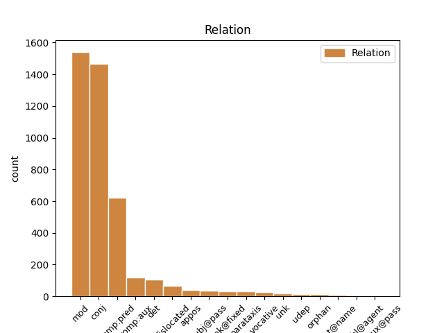
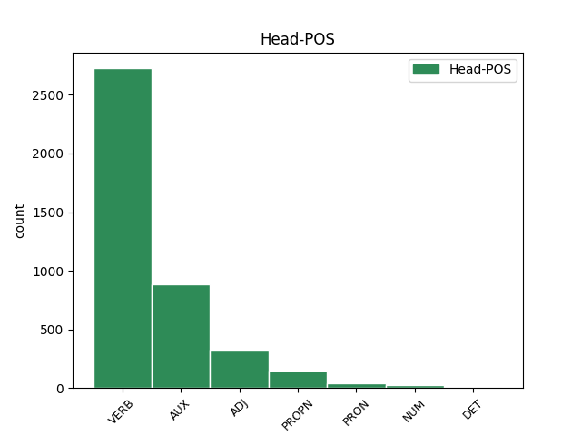
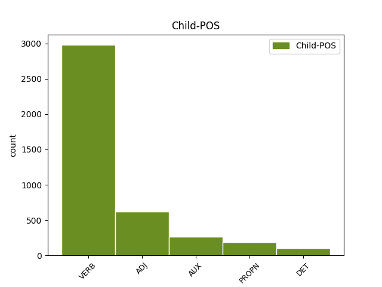

Distribution of features within this leaf



Agreement Rules sorted by frequency.
- When the dependent token is the modifer(mod) of the head token, and the head token is VERB and the dependent token is VERB.
1 си _ _ _ _ 0 _ _ _
2 же _ _ _ _ 0 _ _ _
3 писана _ _ _ _ 0 _ _ _
4 бꙑшѧ _ _ _ _ 0 _ _ _
5 да _ _ _ _ 0 _ _ _
6 вѣрѫ _ _ _ _ 0 _ _ _
7 имете _ _ _ _ 0 _ _ _
8 ѣко _ _ _ _ 0 _ _ _
9 и҃с _ _ _ _ 0 _ _ _
10 естъ _ _ _ _ 0 _ _ _
11 х҃ъ _ _ _ _ 0 _ _ _
12 с҃нъ _ _ _ _ 0 _ _ _
13 б҃жіи _ _ _ _ 0 _ _ _
14 ꙇ _ _ _ _ 0 _ _ _
15 да _ _ _ _ 0 _ _ _
16 вѣрѫѭште вѣровати VERB V- Case=Nom|Gender=Masc|Number=Plur|Strength=Strong|Tense=Pres|VerbForm=Part|Voice=Act 19 mod _ ref=JOHN_20.31
17 живота _ _ _ _ 0 _ _ _
18 вѣчънааго _ _ _ _ 0 _ _ _
19 имате имѣти VERB V- Mood=Ind|Number=Plur|Person=2|Tense=Pres|VerbForm=Fin|Voice=Act 0 _ _ _
20 въ _ _ _ _ 0 _ _ _
21 імѧ _ _ _ _ 0 _ _ _
22 его _ _ _ _ 0 _ _ _
1 блажени _ _ _ _ 0 _ _ _
2 не _ _ _ _ 0 _ _ _
3 видѣвъ. видѣти VERB V- Case=Nom|Gender=Masc|Number=Plur|Strength=Weak|Tense=Past|VerbForm=Part|Voice=Act 0 _ _ _
4 шеи _ _ _ _ 0 _ _ _
5 ꙇ _ _ _ _ 0 _ _ _
6 вѣровавъшеи вѣровати VERB V- Case=Nom|Gender=Masc|Number=Plur|Strength=Weak|Tense=Past|VerbForm=Part|Voice=Pass 3 conj _ ref=JOHN_20.29
1 принеси _ _ _ _ 0 _ _ _
2 пръста _ _ _ _ 0 _ _ _
3 твоего _ _ _ _ 0 _ _ _
4 сѣмо _ _ _ _ 0 _ _ _
5 ꙇ _ _ _ _ 0 _ _ _
6 визжь _ _ _ _ 0 _ _ _
7 рѫцѣ _ _ _ _ 0 _ _ _
8 мои _ _ _ _ 0 _ _ _
9 ꙇ҅ _ _ _ _ 0 _ _ _
10 принеси _ _ _ _ 0 _ _ _
11 рѫкѫ _ _ _ _ 0 _ _ _
12 твоѭ _ _ _ _ 0 _ _ _
13 ꙇ _ _ _ _ 0 _ _ _
14 въложи _ _ _ _ 0 _ _ _
15 въ _ _ _ _ 0 _ _ _
16 ребра _ _ _ _ 0 _ _ _
17 моѣ _ _ _ _ 0 _ _ _
18 ꙇ _ _ _ _ 0 _ _ _
19 не _ _ _ _ 0 _ _ _
20 бѫди бꙑти AUX V- Mood=Imp|Number=Sing|Person=2|Tense=Pres|VerbForm=Fin|Voice=Act 0 _ _ _
21 невѣренъ невѣрьнъ ADJ A- Case=Nom|Degree=Pos|Gender=Masc|Number=Sing|Strength=Strong 20 comp:pred _ ref=JOHN_20.27
22 нъ _ _ _ _ 0 _ _ _
23 вѣренъ _ _ _ _ 0 _ _ _
1 си _ _ _ _ 0 _ _ _
2 же _ _ _ _ 0 _ _ _
3 писана пьсати VERB V- Case=Nom|Gender=Neut|Number=Plur|Strength=Strong|Tense=Past|VerbForm=Part|Voice=Pass 4 comp:pred _ ref=JOHN_20.31
4 бꙑшѧ бꙑти AUX V- Aspect=Perf|Mood=Ind|Number=Plur|Person=3|Tense=Past|VerbForm=Fin|Voice=Act 0 _ _ _
5 да _ _ _ _ 0 _ _ _
6 вѣрѫ _ _ _ _ 0 _ _ _
7 имете _ _ _ _ 0 _ _ _
8 ѣко _ _ _ _ 0 _ _ _
9 и҃с _ _ _ _ 0 _ _ _
10 естъ _ _ _ _ 0 _ _ _
11 х҃ъ _ _ _ _ 0 _ _ _
12 с҃нъ _ _ _ _ 0 _ _ _
13 б҃жіи _ _ _ _ 0 _ _ _
14 ꙇ _ _ _ _ 0 _ _ _
15 да _ _ _ _ 0 _ _ _
16 вѣрѫѭште _ _ _ _ 0 _ _ _
17 живота _ _ _ _ 0 _ _ _
18 вѣчънааго _ _ _ _ 0 _ _ _
19 имате _ _ _ _ 0 _ _ _
20 въ _ _ _ _ 0 _ _ _
21 імѧ _ _ _ _ 0 _ _ _
22 его _ _ _ _ 0 _ _ _
1 г҃и _ _ _ _ 0 _ _ _
2 аште _ _ _ _ 0 _ _ _
3 тꙑ _ _ _ _ 0 _ _ _
4 еси _ _ _ _ 0 _ _ _
5 възѧлъ _ _ _ _ 0 _ _ _
6 повѣждь _ _ _ _ 0 _ _ _
7 мьнѣ _ _ _ _ 0 _ _ _
8 къде _ _ _ _ 0 _ _ _
9 и _ _ _ _ 0 _ _ _
10 еси бꙑти AUX V- Mood=Ind|Number=Sing|Person=2|Tense=Pres|VerbForm=Fin|Voice=Act 0 _ _ _
11 положилъ положити VERB V- Aspect=Res|Case=Nom|Gender=Masc|Number=Sing|Strength=Strong|VerbForm=Part|Voice=Act 10 comp:aux _ ref=JOHN_20.15
12 ꙇ _ _ _ _ 0 _ _ _
13 азъ _ _ _ _ 0 _ _ _
14 ꙇ _ _ _ _ 0 _ _ _
15 вьзъмѫ _ _ _ _ 0 _ _ _
1 ꙇ _ _ _ _ 0 _ _ _
2 аште _ _ _ _ 0 _ _ _
3 рекѫ _ _ _ _ 0 _ _ _
4 ѣко _ _ _ _ 0 _ _ _
5 не _ _ _ _ 0 _ _ _
6 вѣмь _ _ _ _ 0 _ _ _
7 его _ _ _ _ 0 _ _ _
8 бѫдѫ _ _ _ _ 0 _ _ _
9 подобенъ подобьнъ ADJ A- Case=Nom|Degree=Pos|Gender=Masc|Number=Sing|Strength=Strong 11 mod _ ref=JOHN_8.55
10 вамъ _ _ _ _ 0 _ _ _
11 лъжь лъжь ADJ A- Case=Nom|Degree=Pos|Gender=Masc|Number=Sing|Strength=Strong 0 _ _ _
1 что _ _ _ _ 0 _ _ _
2 оубо _ _ _ _ 0 _ _ _
3 к҃рштаеши _ _ _ _ 0 _ _ _
4 аште _ _ _ _ 0 _ _ _
5 тꙑ _ _ _ _ 0 _ _ _
6 нѣси _ _ _ _ 0 _ _ _
7 х҃ъ христ(ос)ъ PROPN Ne Case=Nom|Gender=Masc|Number=Sing 0 _ _ _
8 ни _ _ _ _ 0 _ _ _
9 илиѣ илиꙗ PROPN Ne Case=Nom|Gender=Masc|Number=Sing 7 conj _ ref=JOHN_1.25
10 ни _ _ _ _ 0 _ _ _
11 п҃ркъ _ _ _ _ 0 _ _ _
1 принеси _ _ _ _ 0 _ _ _
2 пръста _ _ _ _ 0 _ _ _
3 твоего _ _ _ _ 0 _ _ _
4 сѣмо _ _ _ _ 0 _ _ _
5 ꙇ _ _ _ _ 0 _ _ _
6 визжь _ _ _ _ 0 _ _ _
7 рѫцѣ _ _ _ _ 0 _ _ _
8 мои _ _ _ _ 0 _ _ _
9 ꙇ҅ _ _ _ _ 0 _ _ _
10 принеси _ _ _ _ 0 _ _ _
11 рѫкѫ _ _ _ _ 0 _ _ _
12 твоѭ _ _ _ _ 0 _ _ _
13 ꙇ _ _ _ _ 0 _ _ _
14 въложи въложити VERB V- Mood=Imp|Number=Sing|Person=2|Tense=Pres|VerbForm=Fin|Voice=Act 0 _ _ _
15 въ _ _ _ _ 0 _ _ _
16 ребра _ _ _ _ 0 _ _ _
17 моѣ _ _ _ _ 0 _ _ _
18 ꙇ _ _ _ _ 0 _ _ _
19 не _ _ _ _ 0 _ _ _
20 бѫди бꙑти AUX V- Mood=Imp|Number=Sing|Person=2|Tense=Pres|VerbForm=Fin|Voice=Act 14 conj _ ref=JOHN_20.27
21 невѣренъ _ _ _ _ 0 _ _ _
22 нъ _ _ _ _ 0 _ _ _
23 вѣренъ _ _ _ _ 0 _ _ _
1 что _ _ _ _ 0 _ _ _
2 естъ _ _ _ _ 0 _ _ _
3 се сь ADJ Pd Case=Nom|Gender=Neut|Number=Sing 0 _ _ _
4 еже _ _ _ _ 0 _ _ _
5 г҃летъ глаголати VERB V- Mood=Ind|Number=Sing|Person=3|Tense=Pres|VerbForm=Fin|Voice=Act 3 mod _ ref=JOHN_16.18
1 Сѫшти _ _ _ _ 0 _ _ _
2 же _ _ _ _ 0 _ _ _
3 поздѣ _ _ _ _ 0 _ _ _
4 вь _ _ _ _ 0 _ _ _
5 тъ _ _ _ _ 0 _ _ _
6 день _ _ _ _ 0 _ _ _
7 вь _ _ _ _ 0 _ _ _
8 единѫ _ _ _ _ 0 _ _ _
9 соботъ _ _ _ _ 0 _ _ _
10 ꙇ _ _ _ _ 0 _ _ _
11 двьремъ _ _ _ _ 0 _ _ _
12 затвореномъ затворити VERB V- Case=Dat|Gender=Masc,Neut|Number=Plur|Strength=Strong|Tense=Past|VerbForm=Part|Voice=Pass 0 _ _ _
13 ꙇдеже _ _ _ _ 0 _ _ _
14 бѣахѫ бꙑти AUX V- Aspect=Imp|Mood=Ind|Number=Plur|Person=3|Tense=Past|VerbForm=Fin|Voice=Act 12 mod _ ref=JOHN_20.19
15 оученици _ _ _ _ 0 _ _ _
16 его _ _ _ _ 0 _ _ _
17 събърани _ _ _ _ 0 _ _ _
18 за _ _ _ _ 0 _ _ _
19 страхъ _ _ _ _ 0 _ _ _
20 июдеискъ _ _ _ _ 0 _ _ _
21 приде _ _ _ _ 0 _ _ _
22 и҃съ _ _ _ _ 0 _ _ _
1 аште _ _ _ _ 0 _ _ _
2 дѣлъ _ _ _ _ 0 _ _ _
3 не _ _ _ _ 0 _ _ _
4 бимь _ _ _ _ 0 _ _ _
5 сътворилъ _ _ _ _ 0 _ _ _
6 въ _ _ _ _ 0 _ _ _
7 нихъ _ _ _ _ 0 _ _ _
8 ꙇхъже _ _ _ _ 0 _ _ _
9 инъ инъ DET Px Case=Nom|Gender=Masc|Number=Sing 10 det _ ref=JOHN_15.24
10 никтоже никътоже ADJ Px Case=Nom|Number=Sing 0 _ _ _
11 сътвори _ _ _ _ 0 _ _ _
12 грѣха _ _ _ _ 0 _ _ _
13 не _ _ _ _ 0 _ _ _
14 бѫ _ _ _ _ 0 _ _ _
15 имѣли _ _ _ _ 0 _ _ _
1 Тома _ _ _ _ 0 _ _ _
2 же _ _ _ _ 0 _ _ _
3 единъ _ _ _ _ 0 _ _ _
4 отъ _ _ _ _ 0 _ _ _
5 обою _ _ _ _ 0 _ _ _
6 на _ _ _ _ 0 _ _ _
7 десѧте _ _ _ _ 0 _ _ _
8 нарицаемꙑ _ _ _ _ 0 _ _ _
9 близнецъ _ _ _ _ 0 _ _ _
10 не _ _ _ _ 0 _ _ _
11 бѣ бꙑти AUX V- Aspect=Imp|Mood=Ind|Number=Sing|Person=3|Tense=Past|VerbForm=Fin|Voice=Act 0 _ _ _
12 тоу _ _ _ _ 0 _ _ _
13 съ _ _ _ _ 0 _ _ _
14 ними _ _ _ _ 0 _ _ _
15 егда _ _ _ _ 0 _ _ _
16 приде прити VERB V- Aspect=Perf|Mood=Ind|Number=Sing|Person=3|Tense=Past|VerbForm=Fin|Voice=Act 11 mod _ ref=JOHN_20.24
17 и҃с _ _ _ _ 0 _ _ _
1 принеси _ _ _ _ 0 _ _ _
2 пръста _ _ _ _ 0 _ _ _
3 твоего _ _ _ _ 0 _ _ _
4 сѣмо _ _ _ _ 0 _ _ _
5 ꙇ _ _ _ _ 0 _ _ _
6 визжь _ _ _ _ 0 _ _ _
7 рѫцѣ _ _ _ _ 0 _ _ _
8 мои _ _ _ _ 0 _ _ _
9 ꙇ҅ _ _ _ _ 0 _ _ _
10 принеси _ _ _ _ 0 _ _ _
11 рѫкѫ _ _ _ _ 0 _ _ _
12 твоѭ _ _ _ _ 0 _ _ _
13 ꙇ _ _ _ _ 0 _ _ _
14 въложи _ _ _ _ 0 _ _ _
15 въ _ _ _ _ 0 _ _ _
16 ребра _ _ _ _ 0 _ _ _
17 моѣ _ _ _ _ 0 _ _ _
18 ꙇ _ _ _ _ 0 _ _ _
19 не _ _ _ _ 0 _ _ _
20 бѫди _ _ _ _ 0 _ _ _
21 невѣренъ невѣрьнъ ADJ A- Case=Nom|Degree=Pos|Gender=Masc|Number=Sing|Strength=Strong 0 _ _ _
22 нъ _ _ _ _ 0 _ _ _
23 вѣренъ вѣрьнъ ADJ A- Case=Nom|Degree=Pos|Gender=Masc|Number=Sing|Strength=Strong 21 conj _ ref=JOHN_20.27
1 не _ _ _ _ 0 _ _ _
2 ѩсѧ _ _ _ _ 0 _ _ _
3 же _ _ _ _ 0 _ _ _
4 вѣрꙑ _ _ _ _ 0 _ _ _
5 июдеи _ _ _ _ 0 _ _ _
6 о _ _ _ _ 0 _ _ _
7 немь _ _ _ _ 0 _ _ _
8 ѣко _ _ _ _ 0 _ _ _
9 бѣ бꙑти AUX V- Aspect=Imp|Mood=Ind|Number=Sing|Person=3|Tense=Past|VerbForm=Fin|Voice=Act 0 _ _ _
10 слѣпъ _ _ _ _ 0 _ _ _
11 и _ _ _ _ 0 _ _ _
12 прозьрѣ прозьрѣти VERB V- Aspect=Perf|Mood=Ind|Number=Sing|Person=3|Tense=Past|VerbForm=Fin|Voice=Act 9 conj _ ref=JOHN_9.18
13 доньдеже _ _ _ _ 0 _ _ _
14 призъвашѧ _ _ _ _ 0 _ _ _
15 родителѣ _ _ _ _ 0 _ _ _
16 того _ _ _ _ 0 _ _ _
17 прозьрѣвъшааго _ _ _ _ 0 _ _ _
18 и _ _ _ _ 0 _ _ _
19 въпросишѧ _ _ _ _ 0 _ _ _
20 ѣ _ _ _ _ 0 _ _ _
21 г҃лѭште _ _ _ _ 0 _ _ _
1 вьсѣкѫ _ _ _ _ 0 _ _ _
2 разгѫ _ _ _ _ 0 _ _ _
3 не _ _ _ _ 0 _ _ _
4 творѧштѫѭ _ _ _ _ 0 _ _ _
5 плода _ _ _ _ 0 _ _ _
6 ꙇзъметъ _ _ _ _ 0 _ _ _
7 ѭ _ _ _ _ 0 _ _ _
8 ꙇ _ _ _ _ 0 _ _ _
9 вьсѣкѫ вьсꙗкъ ADJ A- Case=Acc|Degree=Pos|Gender=Fem|Number=Sing|Strength=Strong 10 mod _ ref=JOHN_15.2
10 творѧштѫ творити VERB V- Case=Acc|Gender=Fem|Number=Sing|Strength=Strong|Tense=Pres|VerbForm=Part|Voice=Act 0 _ _ _
11 плодъ _ _ _ _ 0 _ _ _
12 отрѣбитъ _ _ _ _ 0 _ _ _
13 ѭ _ _ _ _ 0 _ _ _
14 да _ _ _ _ 0 _ _ _
15 плодъ _ _ _ _ 0 _ _ _
16 болии _ _ _ _ 0 _ _ _
17 сътворитъ _ _ _ _ 0 _ _ _
1 се _ _ _ _ 0 _ _ _
2 рекъши _ _ _ _ 0 _ _ _
3 обрати _ _ _ _ 0 _ _ _
4 сѧ _ _ _ _ 0 _ _ _
5 вьспѧть _ _ _ _ 0 _ _ _
6 ꙇ _ _ _ _ 0 _ _ _
7 видѣ видѣти VERB V- Aspect=Perf|Mood=Ind|Number=Sing|Person=3|Tense=Past|VerbForm=Fin|Voice=Act 0 _ _ _
8 и҃са _ _ _ _ 0 _ _ _
9 стоѩшта стоꙗти VERB V- Case=Gen|Gender=Masc|Number=Sing|Strength=Strong|Tense=Pres|VerbForm=Part|Voice=Act 7 comp:pred _ ref=JOHN_20.14
10 ꙇ _ _ _ _ 0 _ _ _
11 не _ _ _ _ 0 _ _ _
12 вѣдѣаше _ _ _ _ 0 _ _ _
13 ѣко _ _ _ _ 0 _ _ _
14 и҃съ _ _ _ _ 0 _ _ _
15 естъ _ _ _ _ 0 _ _ _
1 азъ _ _ _ _ 0 _ _ _
2 есмъ бꙑти AUX V- Mood=Ind|Number=Sing|Person=1|Tense=Pres|VerbForm=Fin|Voice=Act 0 _ _ _
3 лоза _ _ _ _ 0 _ _ _
4 истинънаѣ _ _ _ _ 0 _ _ _
5 ꙇ _ _ _ _ 0 _ _ _
6 о҃тцъ _ _ _ _ 0 _ _ _
7 мои _ _ _ _ 0 _ _ _
8 дѣлатель _ _ _ _ 0 _ _ _
9 естъ бꙑти AUX V- Mood=Ind|Number=Sing|Person=3|Tense=Pres|VerbForm=Fin|Voice=Act 2 conj _ ref=JOHN_15.1
1 си _ _ _ _ 0 _ _ _
2 же _ _ _ _ 0 _ _ _
3 писана _ _ _ _ 0 _ _ _
4 бꙑшѧ _ _ _ _ 0 _ _ _
5 да _ _ _ _ 0 _ _ _
6 вѣрѫ _ _ _ _ 0 _ _ _
7 имете _ _ _ _ 0 _ _ _
8 ѣко _ _ _ _ 0 _ _ _
9 и҃с _ _ _ _ 0 _ _ _
10 естъ бꙑти AUX V- Mood=Ind|Number=Sing|Person=3|Tense=Pres|VerbForm=Fin|Voice=Act 0 _ _ _
11 х҃ъ христ(ос)ъ PROPN Ne Case=Nom|Gender=Masc|Number=Sing 10 comp:pred _ ref=JOHN_20.31
12 с҃нъ _ _ _ _ 0 _ _ _
13 б҃жіи _ _ _ _ 0 _ _ _
14 ꙇ _ _ _ _ 0 _ _ _
15 да _ _ _ _ 0 _ _ _
16 вѣрѫѭште _ _ _ _ 0 _ _ _
17 живота _ _ _ _ 0 _ _ _
18 вѣчънааго _ _ _ _ 0 _ _ _
19 имате _ _ _ _ 0 _ _ _
20 въ _ _ _ _ 0 _ _ _
21 імѧ _ _ _ _ 0 _ _ _
22 его _ _ _ _ 0 _ _ _
1 азъ _ _ _ _ 0 _ _ _
2 есмъ бꙑти AUX V- Mood=Ind|Number=Sing|Person=1|Tense=Pres|VerbForm=Fin|Voice=Act 0 _ _ _
3 лоза _ _ _ _ 0 _ _ _
4 истинънаѣ истиньнъ ADJ A- Case=Nom|Degree=Pos|Gender=Fem|Number=Sing|Strength=Weak 2 mod _ ref=JOHN_15.1
5 ꙇ _ _ _ _ 0 _ _ _
6 о҃тцъ _ _ _ _ 0 _ _ _
7 мои _ _ _ _ 0 _ _ _
8 дѣлатель _ _ _ _ 0 _ _ _
9 естъ _ _ _ _ 0 _ _ _
1 въ _ _ _ _ 0 _ _ _
2 мирѣ _ _ _ _ 0 _ _ _
3 скръбьни скръбьнъ ADJ A- Case=Nom|Degree=Pos|Gender=Masc|Number=Plur|Strength=Strong 0 _ _ _
4 бѫдете _ _ _ _ 0 _ _ _
5 нъ _ _ _ _ 0 _ _ _
6 дръзаите дрьзати VERB V- Mood=Imp|Number=Plur|Person=2|Tense=Pres|VerbForm=Fin|Voice=Act 3 conj _ ref=JOHN_16.33
1 ꙇмъже _ _ _ _ 0 _ _ _
2 отъпоустите отъпоустити VERB V- Mood=Ind|Number=Plur|Person=2|Tense=Pres|VerbForm=Fin|Voice=Act 4 dislocated _ ref=JOHN_20.23
3 грѣхꙑ _ _ _ _ 0 _ _ _
4 отъпоустѧтъ отъпоустити VERB V- Mood=Ind|Number=Plur|Person=3|Tense=Pres|VerbForm=Fin|Voice=Act 0 _ _ _
5 сѧ _ _ _ _ 0 _ _ _
6 имъ _ _ _ _ 0 _ _ _
1 Тома ѳома PROPN Ne Case=Nom|Gender=Masc|Number=Sing 0 _ _ _
2 же _ _ _ _ 0 _ _ _
3 единъ _ _ _ _ 0 _ _ _
4 отъ _ _ _ _ 0 _ _ _
5 обою _ _ _ _ 0 _ _ _
6 на _ _ _ _ 0 _ _ _
7 десѧте _ _ _ _ 0 _ _ _
8 нарицаемꙑ нарицати VERB V- Case=Nom|Gender=Masc|Number=Sing|Strength=Weak|Tense=Pres|VerbForm=Part|Voice=Pass 1 mod _ ref=JOHN_20.24
9 близнецъ _ _ _ _ 0 _ _ _
10 не _ _ _ _ 0 _ _ _
11 бѣ _ _ _ _ 0 _ _ _
12 тоу _ _ _ _ 0 _ _ _
13 съ _ _ _ _ 0 _ _ _
14 ними _ _ _ _ 0 _ _ _
15 егда _ _ _ _ 0 _ _ _
16 приде _ _ _ _ 0 _ _ _
17 и҃с _ _ _ _ 0 _ _ _
1 ч҃лвкъ _ _ _ _ 0 _ _ _
2 нарицаемꙑ нарицати VERB V- Case=Nom|Gender=Masc|Number=Sing|Strength=Weak|Tense=Pres|VerbForm=Part|Voice=Pass 0 _ _ _
3 и҃с исоусъ PROPN Ne Case=Nom|Gender=Masc|Number=Sing 2 comp:pred _ ref=JOHN_9.11
4 брьнье _ _ _ _ 0 _ _ _
5 сътвори _ _ _ _ 0 _ _ _
1 не _ _ _ _ 0 _ _ _
2 ѩсѧ _ _ _ _ 0 _ _ _
3 же _ _ _ _ 0 _ _ _
4 вѣрꙑ _ _ _ _ 0 _ _ _
5 июдеи _ _ _ _ 0 _ _ _
6 о _ _ _ _ 0 _ _ _
7 немь _ _ _ _ 0 _ _ _
8 ѣко _ _ _ _ 0 _ _ _
9 бѣ _ _ _ _ 0 _ _ _
10 слѣпъ _ _ _ _ 0 _ _ _
11 и _ _ _ _ 0 _ _ _
12 прозьрѣ _ _ _ _ 0 _ _ _
13 доньдеже _ _ _ _ 0 _ _ _
14 призъвашѧ _ _ _ _ 0 _ _ _
15 родителѣ _ _ _ _ 0 _ _ _
16 того тъ DET Pd Case=Gen|Gender=Masc,Neut|Number=Sing 17 det _ ref=JOHN_9.18
17 прозьрѣвъшааго прозьрѣти VERB V- Case=Gen|Gender=Masc|Number=Sing|Strength=Weak|Tense=Past|VerbForm=Part|Voice=Act 0 _ _ _
18 и _ _ _ _ 0 _ _ _
19 въпросишѧ _ _ _ _ 0 _ _ _
20 ѣ _ _ _ _ 0 _ _ _
21 г҃лѭште _ _ _ _ 0 _ _ _
1 блажени _ _ _ _ 0 _ _ _
2 не _ _ _ _ 0 _ _ _
3 видѣвъ. видѣти VERB V- Case=Nom|Gender=Masc|Number=Plur|Strength=Weak|Tense=Past|VerbForm=Part|Voice=Act 0 _ _ _
4 шеи шеи VERB V- Case=Nom|Gender=Masc|Number=Plur|Strength=Weak|Tense=Past|VerbForm=Part|Voice=Act 3 unk@fixed _ ref=JOHN_20.29
5 ꙇ _ _ _ _ 0 _ _ _
6 вѣровавъшеи _ _ _ _ 0 _ _ _
1 аште _ _ _ _ 0 _ _ _
2 обрѣзание _ _ _ _ 0 _ _ _
3 приемлетъ _ _ _ _ 0 _ _ _
4 ч҃къ _ _ _ _ 0 _ _ _
5 въ _ _ _ _ 0 _ _ _
6 соботѫ _ _ _ _ 0 _ _ _
7 да _ _ _ _ 0 _ _ _
8 не _ _ _ _ 0 _ _ _
9 разоритъ _ _ _ _ 0 _ _ _
10 сѧ _ _ _ _ 0 _ _ _
11 законъ _ _ _ _ 0 _ _ _
12 мосѣовъ _ _ _ _ 0 _ _ _
13 на _ _ _ _ 0 _ _ _
14 мѧ _ _ _ _ 0 _ _ _
15 ли _ _ _ _ 0 _ _ _
16 гнѣваате _ _ _ _ 0 _ _ _
17 сѧ _ _ _ _ 0 _ _ _
18 ѣко _ _ _ _ 0 _ _ _
19 въсего _ _ _ _ 0 _ _ _
20 члⷦ҇а _ _ _ _ 0 _ _ _
21 съдрава съдравъ ADJ A- Case=Gen|Degree=Pos|Gender=Masc,Neut|Number=Sing|Strength=Strong 22 comp:pred _ ref=JOHN_7.23
22 сътворихъ сътворити VERB V- Aspect=Perf|Mood=Ind|Number=Sing|Person=1|Tense=Past|VerbForm=Fin|Voice=Act 0 _ _ _
23 въ _ _ _ _ 0 _ _ _
24 соботѫ _ _ _ _ 0 _ _ _
1 оумꙑи оумꙑти VERB V- Mood=Imp|Number=Sing|Person=2|Tense=Pres|VerbForm=Fin|Voice=Act 0 _ _ _
2 сѧ _ _ _ _ 0 _ _ _
3 въ _ _ _ _ 0 _ _ _
4 коупѣли _ _ _ _ 0 _ _ _
5 силоуамьсцѣ _ _ _ _ 0 _ _ _
6 еже _ _ _ _ 0 _ _ _
7 съказаатъ съказати VERB V- Mood=Ind|Number=Sing|Person=3|Tense=Pres|VerbForm=Fin|Voice=Act 1 parataxis _ ref=JOHN_9.7
8 сѧ _ _ _ _ 0 _ _ _
9 посъланъ _ _ _ _ 0 _ _ _
1 ꙇмѣѩи имѣти VERB V- Case=Nom|Gender=Masc|Number=Sing|Strength=Weak|Tense=Pres|VerbForm=Part|Voice=Act 8 dislocated _ ref=JOHN_14.21
2 заповѣди _ _ _ _ 0 _ _ _
3 моѩ _ _ _ _ 0 _ _ _
4 и _ _ _ _ 0 _ _ _
5 съблюдаѩ _ _ _ _ 0 _ _ _
6 ѩ _ _ _ _ 0 _ _ _
7 тъ _ _ _ _ 0 _ _ _
8 естъ бꙑти AUX V- Mood=Ind|Number=Sing|Person=3|Tense=Pres|VerbForm=Fin|Voice=Act 0 _ _ _
9 любѧи _ _ _ _ 0 _ _ _
10 мѧ _ _ _ _ 0 _ _ _
1 г҃ла глаголати VERB V- Aspect=Perf|Mood=Ind|Number=Sing|Person=3|Tense=Past|VerbForm=Fin|Voice=Act 0 _ _ _
2 еи _ _ _ _ 0 _ _ _
3 и҃сь _ _ _ _ 0 _ _ _
4 марие мариꙗ PROPN Ne Case=Voc|Gender=Fem|Number=Sing 1 vocative _ ref=JOHN_20.16
1 г҃лааше _ _ _ _ 0 _ _ _
2 же _ _ _ _ 0 _ _ _
3 июдѫ июда PROPN Ne Case=Acc|Gender=Masc|Number=Sing 0 _ _ _
4 симонова симоновъ ADJ A- Case=Gen|Degree=Pos|Gender=Masc,Neut|Number=Sing|Strength=Strong 3 mod _ ref=JOHN_6.71
5 ꙇскариота _ _ _ _ 0 _ _ _
1 си сь ADJ Pd Case=Nom|Gender=Neut|Number=Plur 4 subj@pass _ ref=JOHN_20.31
2 же _ _ _ _ 0 _ _ _
3 писана _ _ _ _ 0 _ _ _
4 бꙑшѧ бꙑти AUX V- Aspect=Perf|Mood=Ind|Number=Plur|Person=3|Tense=Past|VerbForm=Fin|Voice=Act 0 _ _ _
5 да _ _ _ _ 0 _ _ _
6 вѣрѫ _ _ _ _ 0 _ _ _
7 имете _ _ _ _ 0 _ _ _
8 ѣко _ _ _ _ 0 _ _ _
9 и҃с _ _ _ _ 0 _ _ _
10 естъ _ _ _ _ 0 _ _ _
11 х҃ъ _ _ _ _ 0 _ _ _
12 с҃нъ _ _ _ _ 0 _ _ _
13 б҃жіи _ _ _ _ 0 _ _ _
14 ꙇ _ _ _ _ 0 _ _ _
15 да _ _ _ _ 0 _ _ _
16 вѣрѫѭште _ _ _ _ 0 _ _ _
17 живота _ _ _ _ 0 _ _ _
18 вѣчънааго _ _ _ _ 0 _ _ _
19 имате _ _ _ _ 0 _ _ _
20 въ _ _ _ _ 0 _ _ _
21 імѧ _ _ _ _ 0 _ _ _
22 его _ _ _ _ 0 _ _ _
1 а _ _ _ _ 0 _ _ _
2 любѧи любити VERB V- Case=Nom|Gender=Masc|Number=Sing|Strength=Weak|Tense=Pres|VerbForm=Part|Voice=Act 5 subj@pass _ ref=JOHN_14.21
3 мѧ _ _ _ _ 0 _ _ _
4 вьзлюбле҄нъ _ _ _ _ 0 _ _ _
5 бѫдетъ бꙑти AUX V- Mood=Ind|Number=Sing|Person=3|Tense=Fut|VerbForm=Fin|Voice=Act 0 _ _ _
6 о҃тцмъ _ _ _ _ 0 _ _ _
7 моимь _ _ _ _ 0 _ _ _
8 и _ _ _ _ 0 _ _ _
9 азъ _ _ _ _ 0 _ _ _
10 възлюблю _ _ _ _ 0 _ _ _
11 и _ _ _ _ 0 _ _ _
12 ꙇ _ _ _ _ 0 _ _ _
13 ѣвлѭ҄ _ _ _ _ 0 _ _ _
14 сѧ _ _ _ _ 0 _ _ _
15 емоу _ _ _ _ 0 _ _ _
16 самъ _ _ _ _ 0 _ _ _
1 въ _ _ _ _ 0 _ _ _
2 грѣсѣхъ _ _ _ _ 0 _ _ _
3 тꙑ тꙑ PRON Pp Case=Nom|Number=Sing|Person=2|PronType=Prs 0 _ _ _
4 родилъ _ _ _ _ 0 _ _ _
5 сѧ _ _ _ _ 0 _ _ _
6 еси _ _ _ _ 0 _ _ _
7 весь вьсь DET Px Case=Nom|Gender=Masc|Number=Sing 3 det _ ref=JOHN_9.34
8 ꙇ҅ _ _ _ _ 0 _ _ _
9 тꙑ _ _ _ _ 0 _ _ _
10 ли _ _ _ _ 0 _ _ _
11 нꙑ _ _ _ _ 0 _ _ _
12 оучиши _ _ _ _ 0 _ _ _
1 самъ самъ DET Pd Case=Nom|Gender=Masc|Number=Sing 3 det _ ref=JOHN_4.44
2 бо _ _ _ _ 0 _ _ _
3 и҃съ исоусъ PROPN Ne Case=Nom|Gender=Masc|Number=Sing 0 _ _ _
4 съвѣдѣтельствова _ _ _ _ 0 _ _ _
5 ѣко _ _ _ _ 0 _ _ _
6 п҃ркъ _ _ _ _ 0 _ _ _
7 въ _ _ _ _ 0 _ _ _
8 своемь _ _ _ _ 0 _ _ _
9 отъчъствии _ _ _ _ 0 _ _ _
10 не _ _ _ _ 0 _ _ _
11 иматъ _ _ _ _ 0 _ _ _
12 чьсти _ _ _ _ 0 _ _ _
1 г҃ла _ _ _ _ 0 _ _ _
2 емоу _ _ _ _ 0 _ _ _
3 июда июда PROPN Ne Case=Nom|Gender=Masc|Number=Sing 0 _ _ _
4 не _ _ _ _ 0 _ _ _
5 искариотъскꙑ искариотьскъ ADJ A- Case=Nom|Degree=Pos|Gender=Masc|Number=Sing|Strength=Weak 3 appos _ ref=JOHN_14.22
1 никꙑи никꙑиже ADJ Px Case=Nom|Gender=Masc|Number=Sing 0 _ _ _
2 же же ADJ Px Case=Nom|Gender=Masc|Number=Sing 1 unk@fixed _ ref=JOHN_8.10
3 ли _ _ _ _ 0 _ _ _
4 тебе _ _ _ _ 0 _ _ _
5 не _ _ _ _ 0 _ _ _
6 осѫди _ _ _ _ 0 _ _ _
1 егда _ _ _ _ 0 _ _ _
2 въ _ _ _ _ 0 _ _ _
3 мирѣ _ _ _ _ 0 _ _ _
4 есмъ бꙑти AUX V- Mood=Ind|Number=Sing|Person=1|Tense=Pres|VerbForm=Fin|Voice=Act 6 mod _ ref=JOHN_9.5
5 свѣтъ _ _ _ _ 0 _ _ _
6 есмь бꙑти AUX V- Mood=Ind|Number=Sing|Person=1|Tense=Pres|VerbForm=Fin|Voice=Act 0 _ _ _
7 мироу _ _ _ _ 0 _ _ _
1 аште _ _ _ _ 0 _ _ _
2 отъ _ _ _ _ 0 _ _ _
3 мира _ _ _ _ 0 _ _ _
4 бисте бꙑти AUX V- Mood=Sub|Number=Plur|Person=2|Tense=Pres|VerbForm=Fin|Voice=Act 0 _ _ _
5 бꙑли бꙑти AUX V- Aspect=Res|Case=Nom|Gender=Masc|Number=Plur|Strength=Strong|VerbForm=Part|Voice=Act 4 comp:aux _ ref=JOHN_15.19
6 миръ _ _ _ _ 0 _ _ _
7 оубо _ _ _ _ 0 _ _ _
8 свое _ _ _ _ 0 _ _ _
9 любилъ _ _ _ _ 0 _ _ _
10 би _ _ _ _ 0 _ _ _
1 азъ азъ PRON Pp Case=Nom|Number=Sing|Person=1|PronType=Prs 0 _ _ _
2 есмъ _ _ _ _ 0 _ _ _
3 г҃лѧи глаголати VERB V- Case=Nom|Gender=Masc|Number=Sing|Strength=Weak|Tense=Pres|VerbForm=Part|Voice=Act 1 mod _ ref=JOHN_4.26
4 съ _ _ _ _ 0 _ _ _
5 тобоѭ _ _ _ _ 0 _ _ _
1 се _ _ _ _ 0 _ _ _
2 рекъши _ _ _ _ 0 _ _ _
3 обрати _ _ _ _ 0 _ _ _
4 сѧ _ _ _ _ 0 _ _ _
5 вьспѧть _ _ _ _ 0 _ _ _
6 ꙇ _ _ _ _ 0 _ _ _
7 видѣ видѣти VERB V- Aspect=Perf|Mood=Ind|Number=Sing|Person=3|Tense=Past|VerbForm=Fin|Voice=Act 0 _ _ _
8 и҃са исоусъ PROPN Ne Case=Gen|Gender=Masc|Number=Sing 7 unk _ ref=JOHN_20.14
9 стоѩшта _ _ _ _ 0 _ _ _
10 ꙇ _ _ _ _ 0 _ _ _
11 не _ _ _ _ 0 _ _ _
12 вѣдѣаше _ _ _ _ 0 _ _ _
13 ѣко _ _ _ _ 0 _ _ _
14 и҃съ _ _ _ _ 0 _ _ _
15 естъ _ _ _ _ 0 _ _ _
1 въ _ _ _ _ 0 _ _ _
2 тѣхъ _ _ _ _ 0 _ _ _
3 лежааше _ _ _ _ 0 _ _ _
4 мъножьство _ _ _ _ 0 _ _ _
5 болѧштиихъ болѣти VERB V- Case=Gen|Gender=Masc|Number=Plur|Strength=Weak|Tense=Pres|VerbForm=Part|Voice=Act 0 _ _ _
6 слѣпъ _ _ _ _ 0 _ _ _
7 хромъ _ _ _ _ 0 _ _ _
8 соухъ соухъ ADJ A- Case=Gen|Degree=Pos|Number=Plur|Strength=Strong 5 appos _ ref=JOHN_5.3
9 чаѭщиихъ _ _ _ _ 0 _ _ _
10 движениѣ _ _ _ _ 0 _ _ _
11 водѣ _ _ _ _ 0 _ _ _
1 Приде _ _ _ _ 0 _ _ _
2 же _ _ _ _ 0 _ _ _
3 и _ _ _ _ 0 _ _ _
4 симонь симонъ PROPN Ne Case=Nom|Gender=Masc|Number=Sing 0 _ _ _
5 петръ петръ PROPN Ne Case=Nom|Gender=Masc|Number=Sing 4 flat@name _ ref=JOHN_20.6
6 въ _ _ _ _ 0 _ _ _
7 слѣдъ _ _ _ _ 0 _ _ _
8 его _ _ _ _ 0 _ _ _
9 ꙇ _ _ _ _ 0 _ _ _
10 вьниде _ _ _ _ 0 _ _ _
11 прѣжде _ _ _ _ 0 _ _ _
12 въ _ _ _ _ 0 _ _ _
13 гробъ _ _ _ _ 0 _ _ _
14 ꙇ _ _ _ _ 0 _ _ _
15 видѣ _ _ _ _ 0 _ _ _
16 ризꙑ _ _ _ _ 0 _ _ _
17 лежѧштѧ _ _ _ _ 0 _ _ _
18 ꙇ _ _ _ _ 0 _ _ _
19 сѵ҅дарь _ _ _ _ 0 _ _ _
20 иже _ _ _ _ 0 _ _ _
21 бѣ _ _ _ _ 0 _ _ _
22 на _ _ _ _ 0 _ _ _
23 главѣ _ _ _ _ 0 _ _ _
24 его _ _ _ _ 0 _ _ _
25 не _ _ _ _ 0 _ _ _
26 съ _ _ _ _ 0 _ _ _
27 ризами _ _ _ _ 0 _ _ _
28 лежѧшть _ _ _ _ 0 _ _ _
29 нъ _ _ _ _ 0 _ _ _
30 особь _ _ _ _ 0 _ _ _
31 съвитъ _ _ _ _ 0 _ _ _
32 на _ _ _ _ 0 _ _ _
33 единомь _ _ _ _ 0 _ _ _
34 мѣстѣ _ _ _ _ 0 _ _ _
1 си сь ADJ Pd Case=Nom|Gender=Neut|Number=Plur 4 udep _ ref=LUKE_21.6
2 ѣже _ _ _ _ 0 _ _ _
3 видите _ _ _ _ 0 _ _ _
4 придѫтъ прити VERB V- Mood=Ind|Number=Plur|Person=3|Tense=Pres|VerbForm=Fin|Voice=Act 0 _ _ _
5 дьнье _ _ _ _ 0 _ _ _
6 вь _ _ _ _ 0 _ _ _
7 нѧже _ _ _ _ 0 _ _ _
8 не _ _ _ _ 0 _ _ _
9 останетъ _ _ _ _ 0 _ _ _
10 камень _ _ _ _ 0 _ _ _
11 на _ _ _ _ 0 _ _ _
12 камене _ _ _ _ 0 _ _ _
13 иже _ _ _ _ 0 _ _ _
14 не _ _ _ _ 0 _ _ _
15 разоритъ _ _ _ _ 0 _ _ _
16 сѧ _ _ _ _ 0 _ _ _
1 ꙇ _ _ _ _ 0 _ _ _
2 егда _ _ _ _ 0 _ _ _
3 придѫ _ _ _ _ 0 _ _ _
4 на _ _ _ _ 0 _ _ _
5 мѣсто _ _ _ _ 0 _ _ _
6 нарицаемое _ _ _ _ 0 _ _ _
7 краниево _ _ _ _ 0 _ _ _
8 тоу _ _ _ _ 0 _ _ _
9 пропѧсѧ _ _ _ _ 0 _ _ _
10 и _ _ _ _ 0 _ _ _
11 ꙇ _ _ _ _ 0 _ _ _
12 зълодѣа _ _ _ _ 0 _ _ _
13 ового овъ ADJ Pd Case=Gen|Gender=Masc|Number=Sing 0 _ _ _
14 оубо _ _ _ _ 0 _ _ _
15 о _ _ _ _ 0 _ _ _
16 деснѫѭ _ _ _ _ 0 _ _ _
17 а _ _ _ _ 0 _ _ _
18 дроугааго дроугъ ADJ A- Case=Gen|Degree=Pos|Gender=Masc|Number=Sing|Strength=Weak 13 orphan _ ref=LUKE_23.33
19 о _ _ _ _ 0 _ _ _
20 шѫѭѫ _ _ _ _ 0 _ _ _
1 а _ _ _ _ 0 _ _ _
2 иштѧи _ _ _ _ 0 _ _ _
3 славꙑ _ _ _ _ 0 _ _ _
4 посълавъшааго _ _ _ _ 0 _ _ _
5 и _ _ _ _ 0 _ _ _
6 сь _ _ _ _ 0 _ _ _
7 истиненъ истиньнъ ADJ A- Case=Nom|Degree=Pos|Gender=Masc|Number=Sing|Strength=Strong 0 _ _ _
8 естъ _ _ _ _ 0 _ _ _
9 ꙇ _ _ _ _ 0 _ _ _
10 нѣстъ не.бꙑти AUX V- Mood=Ind|Number=Sing|Person=3|Tense=Pres|VerbForm=Fin|Voice=Act 7 conj _ ref=JOHN_7.18
11 неправъдꙑ _ _ _ _ 0 _ _ _
12 вь _ _ _ _ 0 _ _ _
13 немь _ _ _ _ 0 _ _ _
1 вьсѣкъ _ _ _ _ 0 _ _ _
2 ч҃лвкъ _ _ _ _ 0 _ _ _
3 прѣжде _ _ _ _ 0 _ _ _
4 доброе _ _ _ _ 0 _ _ _
5 вино _ _ _ _ 0 _ _ _
6 полагаатъ полагати VERB V- Mood=Ind|Number=Sing|Person=3|Tense=Pres|VerbForm=Fin|Voice=Act 0 _ _ _
7 ꙇ _ _ _ _ 0 _ _ _
8 егда _ _ _ _ 0 _ _ _
9 оупиѭтъ _ _ _ _ 0 _ _ _
10 сѧ _ _ _ _ 0 _ _ _
11 тогда _ _ _ _ 0 _ _ _
12 тачѣе҅ тачаи ADJ A- Case=Acc|Degree=Cmp|Gender=Neut|Number=Sing|Strength=Strong 6 conj _ ref=JOHN_2.10
1 ꙇ _ _ _ _ 0 _ _ _
2 се _ _ _ _ 0 _ _ _
3 сѫтъ _ _ _ _ 0 _ _ _
4 послѣдьнии _ _ _ _ 0 _ _ _
5 иже _ _ _ _ 0 _ _ _
6 бѫдѫтъ _ _ _ _ 0 _ _ _
7 прѣдьнии҅ _ _ _ _ 0 _ _ _
8 и _ _ _ _ 0 _ _ _
9 сѫтъ бꙑти AUX V- Mood=Ind|Number=Plur|Person=3|Tense=Pres|VerbForm=Fin|Voice=Act 0 _ _ _
10 прѣдьнии _ _ _ _ 0 _ _ _
11 ꙇже _ _ _ _ 0 _ _ _
12 бѫдѫтъ бꙑти AUX V- Mood=Ind|Number=Plur|Person=3|Tense=Fut|VerbForm=Fin|Voice=Act 9 comp:pred _ ref=LUKE_13.30
13 послѣдьнии _ _ _ _ 0 _ _ _
1 вьсѣкомоу вьсꙗкъ ADJ A- Case=Dat|Degree=Pos|Gender=Masc,Neut|Number=Sing|Strength=Strong 7 dislocated _ ref=LUKE_12.48
2 же _ _ _ _ 0 _ _ _
3 емоуже _ _ _ _ 0 _ _ _
4 дано _ _ _ _ 0 _ _ _
5 бꙑстъ _ _ _ _ 0 _ _ _
6 мьного _ _ _ _ 0 _ _ _
7 изиштетъ изискати VERB V- Mood=Ind|Number=Sing|Person=3|Tense=Pres|VerbForm=Fin|Voice=Act 0 _ _ _
8 сѧ _ _ _ _ 0 _ _ _
9 отъ _ _ _ _ 0 _ _ _
10 него _ _ _ _ 0 _ _ _
11 и _ _ _ _ 0 _ _ _
12 емоуже _ _ _ _ 0 _ _ _
13 прѣдашѧ _ _ _ _ 0 _ _ _
14 мьного _ _ _ _ 0 _ _ _
15 лишьша _ _ _ _ 0 _ _ _
16 просѧть _ _ _ _ 0 _ _ _
17 отъ _ _ _ _ 0 _ _ _
18 него _ _ _ _ 0 _ _ _
1 не _ _ _ _ 0 _ _ _
2 оу _ _ _ _ 0 _ _ _
3 бо _ _ _ _ 0 _ _ _
4 бѣ _ _ _ _ 0 _ _ _
5 дⷯ҇ъ _ _ _ _ 0 _ _ _
6 с҃тꙑи _ _ _ _ 0 _ _ _
7 данъ _ _ _ _ 0 _ _ _
8 ѣко _ _ _ _ 0 _ _ _
9 и҃съ исоусъ PROPN Ne Case=Nom|Gender=Masc|Number=Sing 12 subj@pass _ ref=JOHN_7.39
10 не _ _ _ _ 0 _ _ _
11 оу _ _ _ _ 0 _ _ _
12 бѣ бꙑти AUX V- Aspect=Imp|Mood=Ind|Number=Sing|Person=3|Tense=Past|VerbForm=Fin|Voice=Act 0 _ _ _
13 прославленъ _ _ _ _ 0 _ _ _
1 ꙇ _ _ _ _ 0 _ _ _
2 ѣкоже _ _ _ _ 0 _ _ _
3 бꙑстъ бꙑти AUX V- Aspect=Perf|Mood=Ind|Number=Sing|Person=3|Tense=Past|VerbForm=Fin|Voice=Act 8 dislocated _ ref=LUKE_17.26
4 въ _ _ _ _ 0 _ _ _
5 дьни _ _ _ _ 0 _ _ _
6 ноевꙑ _ _ _ _ 0 _ _ _
7 тако _ _ _ _ 0 _ _ _
8 бѫдетъ бꙑти AUX V- Mood=Ind|Number=Sing|Person=3|Tense=Fut|VerbForm=Fin|Voice=Act 0 _ _ _
9 и _ _ _ _ 0 _ _ _
10 въ _ _ _ _ 0 _ _ _
11 дьни _ _ _ _ 0 _ _ _
12 с҃на _ _ _ _ 0 _ _ _
13 ч҃лвскааго _ _ _ _ 0 _ _ _
1 равьви _ _ _ _ 0 _ _ _
2 добро _ _ _ _ 0 _ _ _
3 естъ _ _ _ _ 0 _ _ _
4 намъ _ _ _ _ 0 _ _ _
5 съде _ _ _ _ 0 _ _ _
6 бꙑти _ _ _ _ 0 _ _ _
7 ꙇ _ _ _ _ 0 _ _ _
8 сътворимъ _ _ _ _ 0 _ _ _
9 три _ _ _ _ 0 _ _ _
10 скиниѩ _ _ _ _ 0 _ _ _
11 тебѣ _ _ _ _ 0 _ _ _
12 единѫ _ _ _ _ 0 _ _ _
13 и _ _ _ _ 0 _ _ _
14 мосеові _ _ _ _ 0 _ _ _
15 единѫ _ _ _ _ 0 _ _ _
16 ꙇ _ _ _ _ 0 _ _ _
17 илии илиꙗ PROPN Ne Case=Dat|Gender=Masc|Number=Sing 18 orphan _ ref=MARK_9.5
18 единѫ ѥдинъ NUM Ma Case=Acc|Gender=Fem|Number=Sing 0 _ _ _
1 вьсѣкомоу вьсꙗкъ ADJ A- Case=Dat|Degree=Pos|Gender=Masc,Neut|Number=Sing|Strength=Strong 0 _ _ _
2 же _ _ _ _ 0 _ _ _
3 емоуже _ _ _ _ 0 _ _ _
4 дано _ _ _ _ 0 _ _ _
5 бꙑстъ бꙑти AUX V- Aspect=Perf|Mood=Ind|Number=Sing|Person=3|Tense=Past|VerbForm=Fin|Voice=Act 1 mod _ ref=LUKE_12.48
6 мьного _ _ _ _ 0 _ _ _
7 изиштетъ _ _ _ _ 0 _ _ _
8 сѧ _ _ _ _ 0 _ _ _
9 отъ _ _ _ _ 0 _ _ _
10 него _ _ _ _ 0 _ _ _
11 и _ _ _ _ 0 _ _ _
12 емоуже _ _ _ _ 0 _ _ _
13 прѣдашѧ _ _ _ _ 0 _ _ _
14 мьного _ _ _ _ 0 _ _ _
15 лишьша _ _ _ _ 0 _ _ _
16 просѧть _ _ _ _ 0 _ _ _
17 отъ _ _ _ _ 0 _ _ _
18 него _ _ _ _ 0 _ _ _
1 г҃ла _ _ _ _ 0 _ _ _
2 емоу _ _ _ _ 0 _ _ _
3 единъ ѥдинъ ADJ Px Case=Nom|Gender=Masc|Number=Sing 0 _ _ _
4 отъ _ _ _ _ 0 _ _ _
5 оученикъ _ _ _ _ 0 _ _ _
6 его _ _ _ _ 0 _ _ _
7 аньдрѣа аньдреи PROPN Ne Case=Nom|Gender=Masc|Number=Sing 3 appos _ ref=JOHN_6.8
8 братръ _ _ _ _ 0 _ _ _
9 симона _ _ _ _ 0 _ _ _
10 петра _ _ _ _ 0 _ _ _
1 ѣже _ _ _ _ 0 _ _ _
2 о _ _ _ _ 0 _ _ _
3 и҃сѣ исоусъ PROPN Ne Case=Loc|Gender=Masc|Number=Sing 0 _ _ _
4 назарѣнинѣ _ _ _ _ 0 _ _ _
5 ꙇже _ _ _ _ 0 _ _ _
6 бꙑстъ бꙑти AUX V- Aspect=Perf|Mood=Ind|Number=Sing|Person=3|Tense=Past|VerbForm=Fin|Voice=Act 3 appos _ ref=LUKE_24.19
7 мѫжъ _ _ _ _ 0 _ _ _
8 п҃ркъ _ _ _ _ 0 _ _ _
9 силенъ _ _ _ _ 0 _ _ _
10 дѣломь _ _ _ _ 0 _ _ _
11 и _ _ _ _ 0 _ _ _
12 словомь _ _ _ _ 0 _ _ _
13 прѣдъ _ _ _ _ 0 _ _ _
14 б҃мъ _ _ _ _ 0 _ _ _
15 и _ _ _ _ 0 _ _ _
16 вьсѣми _ _ _ _ 0 _ _ _
17 людьми _ _ _ _ 0 _ _ _
18 ꙇ _ _ _ _ 0 _ _ _
19 како _ _ _ _ 0 _ _ _
20 и _ _ _ _ 0 _ _ _
21 прѣдашѧ _ _ _ _ 0 _ _ _
22 архиереи _ _ _ _ 0 _ _ _
23 и _ _ _ _ 0 _ _ _
24 кьнѧѕи _ _ _ _ 0 _ _ _
25 наши _ _ _ _ 0 _ _ _
26 на _ _ _ _ 0 _ _ _
27 осѫждение _ _ _ _ 0 _ _ _
28 съмръти _ _ _ _ 0 _ _ _
29 и _ _ _ _ 0 _ _ _
30 пропѧсѧ _ _ _ _ 0 _ _ _
31 и _ _ _ _ 0 _ _ _
1 егда _ _ _ _ 0 _ _ _
2 зъванъ зъвати VERB V- Case=Nom|Gender=Masc|Number=Sing|Strength=Strong|Tense=Past|VerbForm=Part|Voice=Pass 0 _ _ _
3 бѫдеши _ _ _ _ 0 _ _ _
4 цѣмъ къто ADJ Px Case=Ins|Number=Sing 2 comp:obl@agent _ ref=LUKE_14.8
5 на _ _ _ _ 0 _ _ _
6 бракъ _ _ _ _ 0 _ _ _
7 не _ _ _ _ 0 _ _ _
8 сѧди _ _ _ _ 0 _ _ _
9 на _ _ _ _ 0 _ _ _
10 прѣдьнимь _ _ _ _ 0 _ _ _
11 мѣстѣ _ _ _ _ 0 _ _ _
12 еда _ _ _ _ 0 _ _ _
13 къто _ _ _ _ 0 _ _ _
14 чьстьнѣи _ _ _ _ 0 _ _ _
15 тебе _ _ _ _ 0 _ _ _
16 бѫдетъ _ _ _ _ 0 _ _ _
17 зъванꙑхъ _ _ _ _ 0 _ _ _
18 ꙇ _ _ _ _ 0 _ _ _
19 пришедъ _ _ _ _ 0 _ _ _
20 зъвавꙑ _ _ _ _ 0 _ _ _
21 тѧ _ _ _ _ 0 _ _ _
22 и _ _ _ _ 0 _ _ _
23 оного _ _ _ _ 0 _ _ _
24 речетъ _ _ _ _ 0 _ _ _
25 ти _ _ _ _ 0 _ _ _
1 ꙇ҃се исоусъ PROPN Ne Case=Voc|Gender=Masc|Number=Sing 4 vocative _ ref=MARK_1.24
2 назарѣнине _ _ _ _ 0 _ _ _
3 пришелъ _ _ _ _ 0 _ _ _
4 еси бꙑти AUX V- Mood=Ind|Number=Sing|Person=2|Tense=Pres|VerbForm=Fin|Voice=Act 0 _ _ _
5 погоубитъ _ _ _ _ 0 _ _ _
6 насъ _ _ _ _ 0 _ _ _
1 чьто чьто PRON Pi Case=Acc|Gender=Neut|Number=Sing|PronType=Int 0 _ _ _
2 бо _ _ _ _ 0 _ _ _
3 сътвори _ _ _ _ 0 _ _ _
4 зъло зълъ ADJ A- Case=Acc|Degree=Pos|Gender=Neut|Number=Sing|Strength=Strong 1 mod _ ref=LUKE_23.22
1 егда _ _ _ _ 0 _ _ _
2 възнесете _ _ _ _ 0 _ _ _
3 с҃на _ _ _ _ 0 _ _ _
4 ч҃лвчскааго _ _ _ _ 0 _ _ _
5 тъгда _ _ _ _ 0 _ _ _
6 разоумѣате _ _ _ _ 0 _ _ _
7 ѣко _ _ _ _ 0 _ _ _
8 азъ азъ PRON Pp Case=Nom|Number=Sing|Person=1|PronType=Prs 0 _ _ _
9 есмъ _ _ _ _ 0 _ _ _
10 ꙇ _ _ _ _ 0 _ _ _
11 о _ _ _ _ 0 _ _ _
12 себѣ _ _ _ _ 0 _ _ _
13 ничесоже _ _ _ _ 0 _ _ _
14 не _ _ _ _ 0 _ _ _
15 творѭ творити VERB V- Mood=Ind|Number=Sing|Person=1|Tense=Pres|VerbForm=Fin|Voice=Act 8 conj _ ref=JOHN_8.28
16 нъ _ _ _ _ 0 _ _ _
17 ѣкоже _ _ _ _ 0 _ _ _
18 наоучи _ _ _ _ 0 _ _ _
19 мѧ _ _ _ _ 0 _ _ _
20 о҃тцъ _ _ _ _ 0 _ _ _
21 мои _ _ _ _ 0 _ _ _
22 си _ _ _ _ 0 _ _ _
23 творѭ _ _ _ _ 0 _ _ _
1 оучителю _ _ _ _ 0 _ _ _
2 къто къто PRON Pi Case=Nom|Number=Sing|PronType=Int 0 _ _ _
3 съгрѣши _ _ _ _ 0 _ _ _
4 сь сь ADJ Pd Case=Nom|Gender=Masc|Number=Sing 2 appos _ ref=JOHN_9.2
5 ли _ _ _ _ 0 _ _ _
6 или _ _ _ _ 0 _ _ _
7 родителѣ _ _ _ _ 0 _ _ _
8 его _ _ _ _ 0 _ _ _
9 да _ _ _ _ 0 _ _ _
10 слѣпъ _ _ _ _ 0 _ _ _
11 роди _ _ _ _ 0 _ _ _
12 сѧ _ _ _ _ 0 _ _ _
1 Понеже _ _ _ _ 0 _ _ _
2 оубо _ _ _ _ 0 _ _ _
3 мъноѕи _ _ _ _ 0 _ _ _
4 начѧсѧ _ _ _ _ 0 _ _ _
5 чинити _ _ _ _ 0 _ _ _
6 повѣсть _ _ _ _ 0 _ _ _
7 о _ _ _ _ 0 _ _ _
8 ꙇзвѣстованꙑхъ _ _ _ _ 0 _ _ _
9 въ _ _ _ _ 0 _ _ _
10 насъ _ _ _ _ 0 _ _ _
11 вештехъ _ _ _ _ 0 _ _ _
12 ѣкоже _ _ _ _ 0 _ _ _
13 прѣдашѧ _ _ _ _ 0 _ _ _
14 намъ _ _ _ _ 0 _ _ _
15 бꙑвъшеи _ _ _ _ 0 _ _ _
16 искони _ _ _ _ 0 _ _ _
17 самовидьци _ _ _ _ 0 _ _ _
18 ꙇ _ _ _ _ 0 _ _ _
19 слоугꙑ _ _ _ _ 0 _ _ _
20 словесе _ _ _ _ 0 _ _ _
21 ꙇзволи _ _ _ _ 0 _ _ _
22 сѧ _ _ _ _ 0 _ _ _
23 и _ _ _ _ 0 _ _ _
24 мьнѣ _ _ _ _ 0 _ _ _
25 хождъшю _ _ _ _ 0 _ _ _
26 ис _ _ _ _ 0 _ _ _
27 пръва _ _ _ _ 0 _ _ _
28 по _ _ _ _ 0 _ _ _
29 вьсѣхъ _ _ _ _ 0 _ _ _
30 въ _ _ _ _ 0 _ _ _
31 істинѫ _ _ _ _ 0 _ _ _
32 по _ _ _ _ 0 _ _ _
33 рѧдѫ _ _ _ _ 0 _ _ _
34 писати _ _ _ _ 0 _ _ _
35 тебѣ _ _ _ _ 0 _ _ _
36 славънꙑ славьнъ ADJ A- Case=Voc|Degree=Pos|Gender=Masc|Number=Sing|Strength=Weak 37 dislocated _ ref=LUKE_1.3
37 теофиле ѳеофилъ PROPN Ne Case=Voc|Gender=Masc|Number=Sing 0 _ _ _
38 да _ _ _ _ 0 _ _ _
39 разоумѣеши _ _ _ _ 0 _ _ _
40 о _ _ _ _ 0 _ _ _
41 нихъже _ _ _ _ 0 _ _ _
42 наоучилъ _ _ _ _ 0 _ _ _
43 сѧ _ _ _ _ 0 _ _ _
44 еси _ _ _ _ 0 _ _ _
45 словесехъ _ _ _ _ 0 _ _ _
46 оутвръждение _ _ _ _ 0 _ _ _
1 тогда _ _ _ _ 0 _ _ _
2 сѫште _ _ _ _ 0 _ _ _
3 въ _ _ _ _ 0 _ _ _
4 іюдеи _ _ _ _ 0 _ _ _
5 да _ _ _ _ 0 _ _ _
6 бѣгаѭтъ _ _ _ _ 0 _ _ _
7 въ _ _ _ _ 0 _ _ _
8 горꙑ _ _ _ _ 0 _ _ _
9 ꙇ _ _ _ _ 0 _ _ _
10 иже _ _ _ _ 0 _ _ _
11 по _ _ _ _ 0 _ _ _
12 срѣдѣ _ _ _ _ 0 _ _ _
13 его _ _ _ _ 0 _ _ _
14 да _ _ _ _ 0 _ _ _
15 исходѧтъ _ _ _ _ 0 _ _ _
16 и _ _ _ _ 0 _ _ _
17 иже _ _ _ _ 0 _ _ _
18 въ _ _ _ _ 0 _ _ _
19 странахъ _ _ _ _ 0 _ _ _
20 да _ _ _ _ 0 _ _ _
21 не _ _ _ _ 0 _ _ _
22 въходѧтъ _ _ _ _ 0 _ _ _
23 въ _ _ _ _ 0 _ _ _
24 нъ _ _ _ _ 0 _ _ _
25 ѣко _ _ _ _ 0 _ _ _
26 дьнье _ _ _ _ 0 _ _ _
27 мъштению _ _ _ _ 0 _ _ _
28 си _ _ _ _ 0 _ _ _
29 сѫтъ _ _ _ _ 0 _ _ _
30 да _ _ _ _ 0 _ _ _
31 исплънѧтъ _ _ _ _ 0 _ _ _
32 сѧ _ _ _ _ 0 _ _ _
33 вьсѣ вьсь ADJ Px Case=Nom|Gender=Neut|Number=Plur 34 subj@pass _ ref=LUKE_21.22
34 написанаа напьсати VERB V- Case=Nom|Gender=Neut|Number=Plur|Strength=Weak|Tense=Past|VerbForm=Part|Voice=Pass 0 _ _ _
1 и _ _ _ _ 0 _ _ _
2 призъвавъ _ _ _ _ 0 _ _ _
3 единого ѥдинъ NUM Ma Case=Gen|Gender=Masc|Number=Sing 0 _ _ _
4 когожъдо къжьдо ADJ Px Case=Gen|Gender=Masc,Neut|Number=Sing 3 appos _ ref=LUKE_16.5
5 длъжьникъ _ _ _ _ 0 _ _ _
6 господи _ _ _ _ 0 _ _ _
7 своего _ _ _ _ 0 _ _ _
8 г҃лааше _ _ _ _ 0 _ _ _
9 пръвоумоу _ _ _ _ 0 _ _ _
1 Ꙇ _ _ _ _ 0 _ _ _
2 бꙑстъ _ _ _ _ 0 _ _ _
3 мимо _ _ _ _ 0 _ _ _
4 ходѧштю _ _ _ _ 0 _ _ _
5 емоу и PRON Pp Case=Dat|Gender=Masc|Number=Sing|Person=3|PronType=Prs 0 _ _ _
6 и҃соу исоусъ PROPN Ne Case=Dat|Gender=Masc|Number=Sing 5 appos _ ref=MARK_2.23
7 въ _ _ _ _ 0 _ _ _
8 соботꙑ _ _ _ _ 0 _ _ _
9 сквозѣ _ _ _ _ 0 _ _ _
10 сѣниѣ _ _ _ _ 0 _ _ _
11 ꙇ _ _ _ _ 0 _ _ _
12 начѧсѧ _ _ _ _ 0 _ _ _
13 оученици _ _ _ _ 0 _ _ _
14 его _ _ _ _ 0 _ _ _
15 пѫть _ _ _ _ 0 _ _ _
16 творити _ _ _ _ 0 _ _ _
17 въстръгаѭште _ _ _ _ 0 _ _ _
18 класꙑ _ _ _ _ 0 _ _ _
1 Ꙇ _ _ _ _ 0 _ _ _
2 се _ _ _ _ 0 _ _ _
3 бѣ бꙑти AUX V- Aspect=Imp|Mood=Ind|Number=Sing|Person=3|Tense=Past|VerbForm=Fin|Voice=Act 0 _ _ _
4 ч҃къ _ _ _ _ 0 _ _ _
5 въ _ _ _ _ 0 _ _ _
6 и҃лмѣ _ _ _ _ 0 _ _ _
7 емоуже _ _ _ _ 0 _ _ _
8 имѧ _ _ _ _ 0 _ _ _
9 сѵмеонъ _ _ _ _ 0 _ _ _
10 ꙇ _ _ _ _ 0 _ _ _
11 ч҃къ _ _ _ _ 0 _ _ _
12 съ _ _ _ _ 0 _ _ _
13 правъденъ правьдьнъ ADJ A- Case=Nom|Degree=Pos|Gender=Masc|Number=Sing|Strength=Strong 3 conj _ ref=LUKE_2.25
14 и _ _ _ _ 0 _ _ _
15 чьстивъ _ _ _ _ 0 _ _ _
16 чаѩ _ _ _ _ 0 _ _ _
17 оутѣхꙑ _ _ _ _ 0 _ _ _
18 и҃здрвꙑ _ _ _ _ 0 _ _ _
19 ꙇ _ _ _ _ 0 _ _ _
20 д҃хъ _ _ _ _ 0 _ _ _
21 бѣ _ _ _ _ 0 _ _ _
22 с҃тъ _ _ _ _ 0 _ _ _
23 въ _ _ _ _ 0 _ _ _
24 немь _ _ _ _ 0 _ _ _
1 аште _ _ _ _ 0 _ _ _
2 би _ _ _ _ 0 _ _ _
3 вѣдѣла _ _ _ _ 0 _ _ _
4 даръ _ _ _ _ 0 _ _ _
5 б҃жіи _ _ _ _ 0 _ _ _
6 ꙇ _ _ _ _ 0 _ _ _
7 кто _ _ _ _ 0 _ _ _
8 естъ _ _ _ _ 0 _ _ _
9 г҃лѧи _ _ _ _ 0 _ _ _
10 ти _ _ _ _ 0 _ _ _
11 даждь дати VERB V- Mood=Imp|Number=Sing|Person=2|Tense=Pres|VerbForm=Fin|Voice=Act 15 parataxis _ ref=JOHN_4.10
12 ми _ _ _ _ 0 _ _ _
13 пити _ _ _ _ 0 _ _ _
14 тꙑ _ _ _ _ 0 _ _ _
15 би бꙑти AUX V- Mood=Sub|Number=Sing|Person=2|Tense=Pres|VerbForm=Fin|Voice=Act 0 _ _ _
16 просила _ _ _ _ 0 _ _ _
17 оу _ _ _ _ 0 _ _ _
18 него _ _ _ _ 0 _ _ _
19 и _ _ _ _ 0 _ _ _
20 далъ _ _ _ _ 0 _ _ _
21 ти _ _ _ _ 0 _ _ _
22 би _ _ _ _ 0 _ _ _
23 водѫ _ _ _ _ 0 _ _ _
24 живѫ _ _ _ _ 0 _ _ _
1 Еще _ _ _ _ 0 _ _ _
2 же _ _ _ _ 0 _ _ _
3 емоу _ _ _ _ 0 _ _ _
4 г҃лѭштю _ _ _ _ 0 _ _ _
5 се _ _ _ _ 0 _ _ _
6 народъ _ _ _ _ 0 _ _ _
7 и _ _ _ _ 0 _ _ _
8 нарицаемꙑ нарицати VERB V- Case=Nom|Gender=Masc|Number=Sing|Strength=Weak|Tense=Pres|VerbForm=Part|Voice=Pass 10 mod _ ref=LUKE_22.47
9 июда _ _ _ _ 0 _ _ _
10 единъ ѥдинъ NUM Ma Case=Nom|Gender=Masc|Number=Sing 0 _ _ _
11 отъ _ _ _ _ 0 _ _ _
12 обою _ _ _ _ 0 _ _ _
13 на _ _ _ _ 0 _ _ _
14 десѧте _ _ _ _ 0 _ _ _
15 прѣдъ _ _ _ _ 0 _ _ _
16 ними _ _ _ _ 0 _ _ _
17 идѣаше _ _ _ _ 0 _ _ _
18 и _ _ _ _ 0 _ _ _
19 пристѫпи _ _ _ _ 0 _ _ _
20 къ _ _ _ _ 0 _ _ _
21 і҃сви _ _ _ _ 0 _ _ _
22 лобъзатъ _ _ _ _ 0 _ _ _
23 его _ _ _ _ 0 _ _ _
1 чѧдо _ _ _ _ 0 _ _ _
2 помѣни _ _ _ _ 0 _ _ _
3 ѣко _ _ _ _ 0 _ _ _
4 въсприѩлъ въсприѩти VERB V- Aspect=Res|Case=Nom|Gender=Masc|Number=Sing|Strength=Strong|VerbForm=Part|Voice=Act 0 _ _ _
5 еси _ _ _ _ 0 _ _ _
6 тꙑ _ _ _ _ 0 _ _ _
7 благаа _ _ _ _ 0 _ _ _
8 твоѣ _ _ _ _ 0 _ _ _
9 въ _ _ _ _ 0 _ _ _
10 животѣ _ _ _ _ 0 _ _ _
11 твоемь _ _ _ _ 0 _ _ _
12 ꙇ _ _ _ _ 0 _ _ _
13 лазарь лазаръ PROPN Ne Case=Nom|Gender=Masc|Number=Sing 4 conj _ ref=LUKE_16.25
14 такожде _ _ _ _ 0 _ _ _
15 зълаа _ _ _ _ 0 _ _ _
1 Елисавети елисаветь PROPN Ne Case=Dat|Gender=Fem|Number=Sing 3 dislocated _ ref=LUKE_1.57
2 же _ _ _ _ 0 _ _ _
3 исплъни испльнити VERB V- Aspect=Perf|Mood=Ind|Number=Sing|Person=3|Tense=Past|VerbForm=Fin|Voice=Act 0 _ _ _
4 сѧ _ _ _ _ 0 _ _ _
5 врѣмѧ _ _ _ _ 0 _ _ _
6 родити _ _ _ _ 0 _ _ _
7 еи _ _ _ _ 0 _ _ _
8 ꙇ _ _ _ _ 0 _ _ _
9 роди _ _ _ _ 0 _ _ _
10 с҃нъ _ _ _ _ 0 _ _ _
1 они _ _ _ _ 0 _ _ _
2 же _ _ _ _ 0 _ _ _
3 прилежаахѫ _ _ _ _ 0 _ _ _
4 гласꙑ _ _ _ _ 0 _ _ _
5 велии _ _ _ _ 0 _ _ _
6 просѧште _ _ _ _ 0 _ _ _
7 его _ _ _ _ 0 _ _ _
8 на _ _ _ _ 0 _ _ _
9 пропѧтие _ _ _ _ 0 _ _ _
10 ꙇ҅ _ _ _ _ 0 _ _ _
11 оустоѣахѫ _ _ _ _ 0 _ _ _
12 гласи _ _ _ _ 0 _ _ _
13 ихъ и PRON Pp Case=Gen|Gender=Masc|Number=Plur|Person=3|PronType=Prs 0 _ _ _
14 ꙇ _ _ _ _ 0 _ _ _
15 архиереистии архиереискъ ADJ A- Case=Nom|Degree=Pos|Gender=Masc|Number=Plur|Strength=Weak 13 conj _ ref=LUKE_23.23
1 прѣжде _ _ _ _ 0 _ _ _
2 даже _ _ _ _ 0 _ _ _
3 не _ _ _ _ 0 _ _ _
4 в҃ъзгласи _ _ _ _ 0 _ _ _
5 тебе _ _ _ _ 0 _ _ _
6 филипъ _ _ _ _ 0 _ _ _
7 сѫшта бꙑти AUX V- Case=Gen|Gender=Masc|Number=Sing|Strength=Strong|Tense=Pres|VerbForm=Part|Voice=Act 10 comp:pred _ ref=JOHN_1.49
8 подъ _ _ _ _ 0 _ _ _
9 смоковьницеѭ _ _ _ _ 0 _ _ _
10 видѣхъ видѣти VERB V- Aspect=Perf|Mood=Ind|Number=Sing|Person=1|Tense=Past|VerbForm=Fin|Voice=Act 0 _ _ _
11 тѧ _ _ _ _ 0 _ _ _
1 тоуромъ тѵръ PROPN Ne Case=Dat|Gender=Masc|Number=Sing 5 udep _ ref=MATT_11.22
2 и _ _ _ _ 0 _ _ _
3 сидоноу _ _ _ _ 0 _ _ _
4 отърадьнѣе _ _ _ _ 0 _ _ _
5 бѫдетъ бꙑти AUX V- Mood=Ind|Number=Sing|Person=3|Tense=Fut|VerbForm=Fin|Voice=Act 0 _ _ _
6 вь _ _ _ _ 0 _ _ _
7 день _ _ _ _ 0 _ _ _
8 сѫдънꙑ _ _ _ _ 0 _ _ _
9 неже _ _ _ _ 0 _ _ _
10 вамъ _ _ _ _ 0 _ _ _
1 чъто _ _ _ _ 0 _ _ _
2 мꙑслите мꙑслити VERB V- Mood=Ind|Number=Plur|Person=2|Tense=Pres|VerbForm=Fin|Voice=Act 0 _ _ _
3 въ _ _ _ _ 0 _ _ _
4 себѣ _ _ _ _ 0 _ _ _
5 маловѣри маловѣръ ADJ A- Case=Voc|Degree=Pos|Gender=Masc|Number=Plur|Strength=Strong 2 vocative _ ref=MATT_16.8
6 ѣко _ _ _ _ 0 _ _ _
7 хлѣбъ _ _ _ _ 0 _ _ _
8 не _ _ _ _ 0 _ _ _
9 възѧсте _ _ _ _ 0 _ _ _
1 ꙇшьдъ _ _ _ _ 0 _ _ _
2 же _ _ _ _ 0 _ _ _
3 рабо _ _ _ _ 0 _ _ _
4 тъ _ _ _ _ 0 _ _ _
5 обрѣте _ _ _ _ 0 _ _ _
6 единого ѥдинъ NUM Ma Case=Gen|Gender=Masc|Number=Sing 0 _ _ _
7 отъ _ _ _ _ 0 _ _ _
8 клеврѣтъ _ _ _ _ 0 _ _ _
9 своихъ _ _ _ _ 0 _ _ _
10 ꙇже _ _ _ _ 0 _ _ _
11 бѣ бꙑти AUX V- Aspect=Imp|Mood=Ind|Number=Sing|Person=3|Tense=Past|VerbForm=Fin|Voice=Act 6 appos _ ref=MATT_18.28
12 длъженъ _ _ _ _ 0 _ _ _
13 емоу _ _ _ _ 0 _ _ _
14 сътомъ _ _ _ _ 0 _ _ _
15 пѣнѧѕъ _ _ _ _ 0 _ _ _
16 ꙇ _ _ _ _ 0 _ _ _
17 имъ _ _ _ _ 0 _ _ _
18 давлѣше _ _ _ _ 0 _ _ _
19 и _ _ _ _ 0 _ _ _
20 г҃лѧ _ _ _ _ 0 _ _ _
1 видѣвъше _ _ _ _ 0 _ _ _
2 же _ _ _ _ 0 _ _ _
3 оубо _ _ _ _ 0 _ _ _
4 клеврѣти _ _ _ _ 0 _ _ _
5 бꙑвъша _ _ _ _ 0 _ _ _
6 съжалишѧ _ _ _ _ 0 _ _ _
7 си _ _ _ _ 0 _ _ _
8 ѕѣло _ _ _ _ 0 _ _ _
9 ꙇ _ _ _ _ 0 _ _ _
10 пришедъше _ _ _ _ 0 _ _ _
11 съказашѧ _ _ _ _ 0 _ _ _
12 г҃ноу _ _ _ _ 0 _ _ _
13 своемоу _ _ _ _ 0 _ _ _
14 вьсѣ вьсь DET Px Case=Acc|Gender=Neut|Number=Plur 15 det _ ref=MATT_18.31
15 бꙑвъшаа бꙑти AUX V- Case=Acc|Gender=Neut|Number=Plur|Strength=Weak|Tense=Past|VerbForm=Part|Voice=Act 0 _ _ _
1 оува _ _ _ _ 0 _ _ _
2 разарѣѩи разарꙗти VERB V- Case=Voc|Gender=Masc|Number=Sing|Strength=Weak|Tense=Pres|VerbForm=Part|Voice=Act 8 vocative _ ref=MATT_27.40
3 ц҃рквъ _ _ _ _ 0 _ _ _
4 ꙇ _ _ _ _ 0 _ _ _
5 трьми _ _ _ _ 0 _ _ _
6 деньми _ _ _ _ 0 _ _ _
7 съзидаѩ _ _ _ _ 0 _ _ _
8 с҃ъпси съпасти VERB V- Mood=Imp|Number=Sing|Person=2|Tense=Pres|VerbForm=Fin|Voice=Act 0 _ _ _
9 себе _ _ _ _ 0 _ _ _
1 ꙇ _ _ _ _ 0 _ _ _
2 прѣшедъ _ _ _ _ 0 _ _ _
3 отъ _ _ _ _ 0 _ _ _
4 тѫдоу _ _ _ _ 0 _ _ _
5 оузьрѣ _ _ _ _ 0 _ _ _
6 иѣкова _ _ _ _ 0 _ _ _
7 зеведеова _ _ _ _ 0 _ _ _
8 ꙇ _ _ _ _ 0 _ _ _
9 иоана _ _ _ _ 0 _ _ _
10 братра _ _ _ _ 0 _ _ _
11 его _ _ _ _ 0 _ _ _
12 ꙇ _ _ _ _ 0 _ _ _
13 та тъ ADJ Pd Case=Acc|Gender=Masc|Number=Dual 0 _ _ _
14 въ _ _ _ _ 0 _ _ _
15 ладии _ _ _ _ 0 _ _ _
16 завѧзаѭшта завѧзати VERB V- Case=Acc|Gender=Masc|Number=Dual|Strength=Strong|Tense=Pres|VerbForm=Part|Voice=Act 13 orphan _ ref=MARK_1.19
17 мрѣжѧ _ _ _ _ 0 _ _ _
18 ꙇ _ _ _ _ 0 _ _ _
19 абье _ _ _ _ 0 _ _ _
20 възъва _ _ _ _ 0 _ _ _
21 ѣ _ _ _ _ 0 _ _ _
1 тѣмь тъ ADJ Pd Case=Ins|Gender=Neut|Number=Sing 4 udep _ ref=MARK_2.27
2 же _ _ _ _ 0 _ _ _
3 г҃ъ _ _ _ _ 0 _ _ _
4 естъ бꙑти AUX V- Mood=Ind|Number=Sing|Person=3|Tense=Pres|VerbForm=Fin|Voice=Act 0 _ _ _
5 с҃нъ _ _ _ _ 0 _ _ _
6 ч҃лчскꙑ _ _ _ _ 0 _ _ _
7 соботѣ _ _ _ _ 0 _ _ _
1 ꙇ _ _ _ _ 0 _ _ _
2 вънезаапѫ _ _ _ _ 0 _ _ _
3 вьзьрѣвъше _ _ _ _ 0 _ _ _
4 никогоже никътоже ADJ Px Case=Gen|Number=Sing 0 _ _ _
5 не _ _ _ _ 0 _ _ _
6 видѣшѧ _ _ _ _ 0 _ _ _
7 тъкъмо _ _ _ _ 0 _ _ _
8 нъ _ _ _ _ 0 _ _ _
9 и҃са исоусъ PROPN Ne Case=Gen|Gender=Masc|Number=Sing 4 conj _ ref=MARK_9.8
10 единого _ _ _ _ 0 _ _ _
11 съ _ _ _ _ 0 _ _ _
12 собоѭ _ _ _ _ 0 _ _ _
1 добрѣ _ _ _ _ 0 _ _ _
2 оучителю _ _ _ _ 0 _ _ _
3 въ _ _ _ _ 0 _ _ _
4 істинѫ _ _ _ _ 0 _ _ _
5 рече _ _ _ _ 0 _ _ _
6 ѣко _ _ _ _ 0 _ _ _
7 единъ ѥдинъ NUM Ma Case=Nom|Gender=Masc|Number=Sing 0 _ _ _
8 естъ _ _ _ _ 0 _ _ _
9 ꙇ _ _ _ _ 0 _ _ _
10 нѣстъ не.бꙑти AUX V- Mood=Ind|Number=Sing|Person=3|Tense=Pres|VerbForm=Fin|Voice=Act 7 conj _ ref=MARK_12.32
11 иного _ _ _ _ 0 _ _ _
12 развѣ _ _ _ _ 0 _ _ _
13 его _ _ _ _ 0 _ _ _
1 Егда _ _ _ _ 0 _ _ _
2 же _ _ _ _ 0 _ _ _
3 мръзость _ _ _ _ 0 _ _ _
4 оузьрите _ _ _ _ 0 _ _ _
5 запоустѣниѣ _ _ _ _ 0 _ _ _
6 реченѫѭ рещи VERB V- Case=Acc|Gender=Fem|Number=Sing|Strength=Weak|Tense=Past|VerbForm=Part|Voice=Pass 0 _ _ _
7 данииломъ данилъ PROPN Ne Case=Ins|Gender=Masc|Number=Sing 6 comp:obl@agent _ ref=MARK_13.14
8 п҃ркмъ _ _ _ _ 0 _ _ _
9 стоѩштѫ _ _ _ _ 0 _ _ _
10 идеже _ _ _ _ 0 _ _ _
11 не _ _ _ _ 0 _ _ _
12 подобаатъ _ _ _ _ 0 _ _ _
13 чътꙑ _ _ _ _ 0 _ _ _
14 да _ _ _ _ 0 _ _ _
15 разоумѣатъ _ _ _ _ 0 _ _ _
16 тъгда _ _ _ _ 0 _ _ _
17 иже _ _ _ _ 0 _ _ _
18 бѫдѫтъ _ _ _ _ 0 _ _ _
19 въ _ _ _ _ 0 _ _ _
20 іюдеи _ _ _ _ 0 _ _ _
21 да _ _ _ _ 0 _ _ _
22 бѣгаѭтъ _ _ _ _ 0 _ _ _
23 на _ _ _ _ 0 _ _ _
24 горꙑ _ _ _ _ 0 _ _ _
25 ꙇ _ _ _ _ 0 _ _ _
26 иже _ _ _ _ 0 _ _ _
27 на _ _ _ _ 0 _ _ _
28 кровѣ _ _ _ _ 0 _ _ _
29 да _ _ _ _ 0 _ _ _
30 не _ _ _ _ 0 _ _ _
31 сълазитъ _ _ _ _ 0 _ _ _
32 въ _ _ _ _ 0 _ _ _
33 домъ _ _ _ _ 0 _ _ _
34 ни _ _ _ _ 0 _ _ _
35 да _ _ _ _ 0 _ _ _
36 вънидетъ _ _ _ _ 0 _ _ _
37 вьзѧтъ _ _ _ _ 0 _ _ _
38 чесо _ _ _ _ 0 _ _ _
39 отъ _ _ _ _ 0 _ _ _
40 домоу _ _ _ _ 0 _ _ _
41 своего _ _ _ _ 0 _ _ _
42 и _ _ _ _ 0 _ _ _
43 сꙑи _ _ _ _ 0 _ _ _
44 на _ _ _ _ 0 _ _ _
45 селѣ _ _ _ _ 0 _ _ _
46 да _ _ _ _ 0 _ _ _
47 не _ _ _ _ 0 _ _ _
48 възвратитъ _ _ _ _ 0 _ _ _
49 сѧ _ _ _ _ 0 _ _ _
50 вьспѧть _ _ _ _ 0 _ _ _
51 вьзѧтъ _ _ _ _ 0 _ _ _
52 ризъ _ _ _ _ 0 _ _ _
53 своихъ _ _ _ _ 0 _ _ _
1 Ꙇ҅ _ _ _ _ 0 _ _ _
2 аште _ _ _ _ 0 _ _ _
3 не _ _ _ _ 0 _ _ _
4 би _ _ _ _ 0 _ _ _
5 г҃ъ _ _ _ _ 0 _ _ _
6 прѣкратилъ _ _ _ _ 0 _ _ _
7 дьнии _ _ _ _ 0 _ _ _
8 не _ _ _ _ 0 _ _ _
9 би бꙑти AUX V- Mood=Sub|Number=Sing|Person=3|Tense=Pres|VerbForm=Fin|Voice=Act 0 _ _ _
10 бꙑла _ _ _ _ 0 _ _ _
11 съпасена съпасти VERB V- Case=Nom|Gender=Fem|Number=Sing|Strength=Strong|Tense=Past|VerbForm=Part|Voice=Pass 9 comp:aux@pass _ LId=1|ref=MARK_13.20
12 вьсѣка _ _ _ _ 0 _ _ _
13 плъть _ _ _ _ 0 _ _ _
1 тоу _ _ _ _ 0 _ _ _
2 бѫдетъ _ _ _ _ 0 _ _ _
3 плачь _ _ _ _ 0 _ _ _
4 и _ _ _ _ 0 _ _ _
5 скрьжетъ _ _ _ _ 0 _ _ _
6 зѫбомь _ _ _ _ 0 _ _ _
7 егда _ _ _ _ 0 _ _ _
8 оузьрите _ _ _ _ 0 _ _ _
9 авраама _ _ _ _ 0 _ _ _
10 и _ _ _ _ 0 _ _ _
11 исака _ _ _ _ 0 _ _ _
12 и _ _ _ _ 0 _ _ _
13 иѣкова _ _ _ _ 0 _ _ _
14 ꙇ _ _ _ _ 0 _ _ _
15 вьсѧ _ _ _ _ 0 _ _ _
16 пророкꙑ _ _ _ _ 0 _ _ _
17 въ _ _ _ _ 0 _ _ _
18 ц҃срствии _ _ _ _ 0 _ _ _
19 б҃жии _ _ _ _ 0 _ _ _
20 вꙑ вꙑ PRON Pp Case=Acc|Number=Plur|Person=2|PronType=Prs 0 _ _ _
21 же _ _ _ _ 0 _ _ _
22 изгонимꙑ изгонити VERB V- Case=Acc|Gender=Fem,Masc|Number=Plur|Strength=Strong|Tense=Pres|VerbForm=Part|Voice=Pass 20 orphan _ ref=LUKE_13.28
23 вонъ _ _ _ _ 0 _ _ _
1 никꙑи никꙑиже DET Px Case=Nom|Gender=Masc|Number=Sing 0 _ _ _
2 же же ADJ Px Case=Nom|Gender=Masc|Number=Sing 1 unk@fixed _ ref=LUKE_16.13
3 рабъ _ _ _ _ 0 _ _ _
4 не _ _ _ _ 0 _ _ _
5 можетъ _ _ _ _ 0 _ _ _
6 дъвѣма _ _ _ _ 0 _ _ _
7 г҃ьма _ _ _ _ 0 _ _ _
8 работати _ _ _ _ 0 _ _ _
1 и _ _ _ _ 0 _ _ _
2 поѩтъ _ _ _ _ 0 _ _ _
3 въторꙑ _ _ _ _ 0 _ _ _
4 женѫ _ _ _ _ 0 _ _ _
5 ꙇ _ _ _ _ 0 _ _ _
6 тъ _ _ _ _ 0 _ _ _
7 оумьрѣтъ _ _ _ _ 0 _ _ _
8 бештѧдьнъ _ _ _ _ 0 _ _ _
9 и _ _ _ _ 0 _ _ _
10 трети _ _ _ _ 0 _ _ _
11 поѩтъ _ _ _ _ 0 _ _ _
12 ѭ _ _ _ _ 0 _ _ _
13 такожде _ _ _ _ 0 _ _ _
14 же _ _ _ _ 0 _ _ _
15 и _ _ _ _ 0 _ _ _
16 вьсѣ вьсь DET Px Case=Nom|Gender=Fem|Number=Sing 17 det _ ref=LUKE_20.31
17 седмь седмь NUM Ma Case=Nom|Gender=Fem|Number=Sing 0 _ _ _
18 оумьрѣшѧ _ _ _ _ 0 _ _ _
19 не _ _ _ _ 0 _ _ _
20 оставльше _ _ _ _ 0 _ _ _
21 чѧдъ _ _ _ _ 0 _ _ _
1 Бѣ бꙑти AUX V- Aspect=Imp|Mood=Ind|Number=Sing|Person=3|Tense=Past|VerbForm=Fin|Voice=Act 0 _ _ _
2 же _ _ _ _ 0 _ _ _
3 ч҃лвкъ _ _ _ _ 0 _ _ _
4 отъ _ _ _ _ 0 _ _ _
5 фарисѣи _ _ _ _ 0 _ _ _
6 никодимъ никодимъ PROPN Ne Case=Nom|Gender=Masc|Number=Sing 1 parataxis _ ref=JOHN_3.1
7 имѧ _ _ _ _ 0 _ _ _
8 емоу _ _ _ _ 0 _ _ _
9 кънѧѕъ _ _ _ _ 0 _ _ _
10 июдеискъ _ _ _ _ 0 _ _ _
1 равьви _ _ _ _ 0 _ _ _
2 ꙇже _ _ _ _ 0 _ _ _
3 бѣ бꙑти AUX V- Aspect=Imp|Mood=Ind|Number=Sing|Person=3|Tense=Past|VerbForm=Fin|Voice=Act 15 dislocated _ ref=JOHN_3.26
4 съ _ _ _ _ 0 _ _ _
5 тобоѭ _ _ _ _ 0 _ _ _
6 об _ _ _ _ 0 _ _ _
7 онъ _ _ _ _ 0 _ _ _
8 полъ _ _ _ _ 0 _ _ _
9 иоръдана _ _ _ _ 0 _ _ _
10 емоуже _ _ _ _ 0 _ _ _
11 тꙑ _ _ _ _ 0 _ _ _
12 съвѣдѣтельствова _ _ _ _ 0 _ _ _
13 се _ _ _ _ 0 _ _ _
14 сь _ _ _ _ 0 _ _ _
15 крьштаатъ крьщати VERB V- Mood=Ind|Number=Sing|Person=3|Tense=Pres|VerbForm=Fin|Voice=Act 0 _ _ _
16 и _ _ _ _ 0 _ _ _
17 вьси _ _ _ _ 0 _ _ _
18 грѧдѫтъ _ _ _ _ 0 _ _ _
19 къ _ _ _ _ 0 _ _ _
20 немоу _ _ _ _ 0 _ _ _
1 сего сь ADJ Pd Case=Gen|Gender=Masc|Number=Sing 2 unk _ ref=JOHN_5.6
2 видѣвъ видѣти VERB V- Case=Nom|Gender=Masc|Number=Sing|Strength=Strong|Tense=Past|VerbForm=Part|Voice=Act 0 _ _ _
3 и҃с _ _ _ _ 0 _ _ _
4 лежѧшта _ _ _ _ 0 _ _ _
5 ꙇ _ _ _ _ 0 _ _ _
6 разоумѣвъ _ _ _ _ 0 _ _ _
7 ѣко _ _ _ _ 0 _ _ _
8 мънога _ _ _ _ 0 _ _ _
9 лѣта _ _ _ _ 0 _ _ _
10 ѭже _ _ _ _ 0 _ _ _
11 имѣаше _ _ _ _ 0 _ _ _
12 г҃ла _ _ _ _ 0 _ _ _
13 емоу _ _ _ _ 0 _ _ _
1 не _ _ _ _ 0 _ _ _
2 дивите _ _ _ _ 0 _ _ _
3 сѧ _ _ _ _ 0 _ _ _
4 семоу _ _ _ _ 0 _ _ _
5 ѣко _ _ _ _ 0 _ _ _
6 грѧдетъ _ _ _ _ 0 _ _ _
7 година _ _ _ _ 0 _ _ _
8 вь _ _ _ _ 0 _ _ _
9 нюже _ _ _ _ 0 _ _ _
10 вьси _ _ _ _ 0 _ _ _
11 сѫштеи _ _ _ _ 0 _ _ _
12 въ _ _ _ _ 0 _ _ _
13 гробѣхъ _ _ _ _ 0 _ _ _
14 оуслꙑшѧтъ _ _ _ _ 0 _ _ _
15 г҃лсъ _ _ _ _ 0 _ _ _
16 с҃на _ _ _ _ 0 _ _ _
17 б҃жиѣ _ _ _ _ 0 _ _ _
18 и _ _ _ _ 0 _ _ _
19 изидѫтъ _ _ _ _ 0 _ _ _
20 сътворьшеи сътворити VERB V- Case=Nom|Gender=Masc|Number=Plur|Strength=Weak|Tense=Past|VerbForm=Part|Voice=Act 0 _ _ _
21 благаа _ _ _ _ 0 _ _ _
22 въ _ _ _ _ 0 _ _ _
23 вьскрѣшение _ _ _ _ 0 _ _ _
24 животоу _ _ _ _ 0 _ _ _
25 а _ _ _ _ 0 _ _ _
26 сътворьшеи сътворити VERB V- Case=Nom|Gender=Masc|Number=Plur|Strength=Weak|Tense=Past|VerbForm=Part|Voice=Act 20 orphan _ ref=JOHN_5.29
27 зълаа _ _ _ _ 0 _ _ _
28 въ _ _ _ _ 0 _ _ _
29 вьскрѣшение _ _ _ _ 0 _ _ _
30 сѫдоу _ _ _ _ 0 _ _ _
1 вѣсѧ _ _ _ _ 0 _ _ _
2 и и PRON Pp Case=Acc|Gender=Masc|Number=Sing|Person=3|PronType=Prs 0 _ _ _
3 къ _ _ _ _ 0 _ _ _
4 фарисѣемъ _ _ _ _ 0 _ _ _
5 иже _ _ _ _ 0 _ _ _
6 бѣ бꙑти AUX V- Aspect=Imp|Mood=Ind|Number=Sing|Person=3|Tense=Past|VerbForm=Fin|Voice=Act 2 appos _ ref=JOHN_9.13
7 иногда _ _ _ _ 0 _ _ _
8 слѣпъ _ _ _ _ 0 _ _ _
Disagree Examples:
1 Ꙇ _ _ _ _ 0 _ _ _
2 се _ _ _ _ 0 _ _ _
3 принѣсѧ принести VERB V- Aspect=Perf|Mood=Ind|Number=Plur|Person=3|Tense=Past|VerbForm=Fin|Voice=Act 0 _ _ _
4 емоу _ _ _ _ 0 _ _ _
5 ослабленъ _ _ _ _ 0 _ _ _
6 жилами _ _ _ _ 0 _ _ _
7 на _ _ _ _ 0 _ _ _
8 одрѣ _ _ _ _ 0 _ _ _
9 лежѧщъ лежати VERB V- Case=Acc|Gender=Masc|Number=Sing|Strength=Strong|Tense=Pres|VerbForm=Part|Voice=Act 3 mod _ ref=MATT_9.2
1 чъто _ _ _ _ 0 _ _ _
2 бо _ _ _ _ 0 _ _ _
3 естъ бꙑти AUX V- Mood=Ind|Number=Sing|Person=3|Tense=Pres|VerbForm=Fin|Voice=Act 0 _ _ _
4 оудобѣе _ _ _ _ 0 _ _ _
5 решти _ _ _ _ 0 _ _ _
6 отъпоущаѭтъ отъпоустити VERB V- Mood=Ind|Number=Plur|Person=3|Tense=Pres|VerbForm=Fin|Voice=Act 3 parataxis _ ref=MATT_9.5
7 сѧ _ _ _ _ 0 _ _ _
8 грѣси _ _ _ _ 0 _ _ _
9 твои _ _ _ _ 0 _ _ _
10 ли _ _ _ _ 0 _ _ _
11 рещи _ _ _ _ 0 _ _ _
1 ꙇ _ _ _ _ 0 _ _ _
2 бꙑⷭ҇ бꙑти AUX V- Aspect=Perf|Mood=Ind|Number=Sing|Person=3|Tense=Past|VerbForm=Fin|Voice=Act 0 _ _ _
3 емоу _ _ _ _ 0 _ _ _
4 вьзлежѧщю _ _ _ _ 0 _ _ _
5 въ _ _ _ _ 0 _ _ _
6 домоу _ _ _ _ 0 _ _ _
7 ꙇ _ _ _ _ 0 _ _ _
8 се _ _ _ _ 0 _ _ _
9 мъноѕи _ _ _ _ 0 _ _ _
10 грѣшъници _ _ _ _ 0 _ _ _
11 и _ _ _ _ 0 _ _ _
12 мꙑтаре _ _ _ _ 0 _ _ _
13 пришедъше _ _ _ _ 0 _ _ _
14 възлежаахѫ възлежати VERB V- Aspect=Imp|Mood=Ind|Number=Plur|Person=3|Tense=Past|VerbForm=Fin|Voice=Act 2 conj _ ref=MATT_9.10
15 съ _ _ _ _ 0 _ _ _
16 и҃смъ _ _ _ _ 0 _ _ _
17 ꙇ _ _ _ _ 0 _ _ _
18 съ _ _ _ _ 0 _ _ _
19 оученикꙑ _ _ _ _ 0 _ _ _
20 его _ _ _ _ 0 _ _ _
1 аще _ _ _ _ 0 _ _ _
2 ли _ _ _ _ 0 _ _ _
3 же _ _ _ _ 0 _ _ _
4 ни _ _ _ _ 0 _ _ _
5 просѧдѫтъ просѣсти VERB V- Mood=Ind|Number=Plur|Person=3|Tense=Pres|VerbForm=Fin|Voice=Act 0 _ _ _
6 сѧ _ _ _ _ 0 _ _ _
7 мѣси _ _ _ _ 0 _ _ _
8 ꙇ _ _ _ _ 0 _ _ _
9 вино _ _ _ _ 0 _ _ _
10 пролѣетъ пролиꙗти VERB V- Mood=Ind|Number=Sing|Person=3|Tense=Pres|VerbForm=Fin|Voice=Act 5 conj _ ref=MATT_9.17
11 сѧ _ _ _ _ 0 _ _ _
12 ꙇ _ _ _ _ 0 _ _ _
13 мѣси _ _ _ _ 0 _ _ _
14 погꙑблѭтъ _ _ _ _ 0 _ _ _
1 аще _ _ _ _ 0 _ _ _
2 ли _ _ _ _ 0 _ _ _
3 же _ _ _ _ 0 _ _ _
4 ни _ _ _ _ 0 _ _ _
5 просѧдѫтъ _ _ _ _ 0 _ _ _
6 сѧ _ _ _ _ 0 _ _ _
7 мѣси _ _ _ _ 0 _ _ _
8 ꙇ _ _ _ _ 0 _ _ _
9 вино _ _ _ _ 0 _ _ _
10 пролѣетъ пролиꙗти VERB V- Mood=Ind|Number=Sing|Person=3|Tense=Pres|VerbForm=Fin|Voice=Act 0 _ _ _
11 сѧ _ _ _ _ 0 _ _ _
12 ꙇ _ _ _ _ 0 _ _ _
13 мѣси _ _ _ _ 0 _ _ _
14 погꙑблѭтъ погꙑбати VERB V- Mood=Ind|Number=Plur|Person=3|Tense=Pres|VerbForm=Fin|Voice=Act 10 conj _ ref=MATT_9.17